CMU15-445 Concurrency
Last updated on 4 months ago
Concurrency
- Concurrency
Concurrency Control Thery
Architecture
Database 的组件从上至下依次为：
Query Planning：解析SQL生成AST并对其进行optimize得到过程Operator Execution：实际执行physical planAccess Method：定义底层数据的访问，通过B+Tree、Hash Table等Buffer Pool Manager：绕过OS对文件系统的管理，通过自定义的组件来实现文件的读写Disk Manager：与磁盘进行交互
并发控制 concurrency control 和恢复
recorver 分别跨越
Operator Execution, Access Method 和
Buffer Pool Manager, Disk Manager，如下图所示：
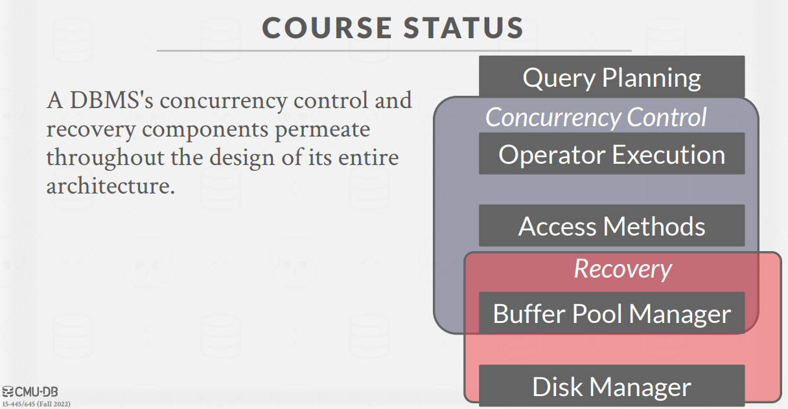
Concurrency control 用于解决数据竞争
data race 的相关问题；Recovery
用于保证数据库系统的一致性 data consistence
Transaction
事务 Transaction 是一系列操作的执行。例如，我们将多条
SQL
语句的执行看成一个整体，这个整体便是事务。transaction 是
DBMS 改变的基本单元，即只有一个完整的
transaction 对 DBMS
做出的修改才是有意义的，而不完整的事务 partical transcation
是不允许出现的
A transaction is the execution of a sequence of one or more operations (e.g., SQL queries) on a database to perform some higher-level function.
It is the basic unit of change in a DBMS:
→ Partial transactions are not allowed!
因此，对于 transcation
中的操作而言，要么全部被执行，要么一条都没有被执行
举个具体的例子，假如 \(A\) 要向 \(B\) 转账 \(100\) 元，那么事务为：
- 检查 \(A\) 是否有 \(100\) 元
- 将 \(A\) 账户减去 \(100\) 元
- 将 \(B\) 账户增加 \(100\) 元
Transaction Execution
Strawman
关于事务如何执行，最简单的办法就是一次使用一个
worker(or thread)
来执行一个是事务。为了执行该事务，DBMS 会将整个
database
文件复制一份，然后对新复制的文件做修改。如果事务成功执行，那么新的文件将覆盖原先的文件；如果事务执行失败，那么新的文件将被丢弃
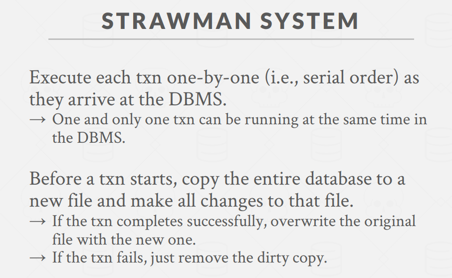
这种方式非常的慢，因为它不仅无法做到事务的并发执行，还需要对每个事务都复制一遍整个数据库文件
我们希望对于独立的事务而言，它们可以并发地执行，因为这可以：
- 增大系统的利用率
utilization和吞吐量throughput - 减小系统对用户的响应时间
response time
如果我们随意交叠 arbitrary interleaving
不同的操作的执行，那么会导致很多的问题，在开始分析哪些
interleaving 是有效的之前，我们需要一个形式上的定义
Definition
一个 transaction, txn
可能会对数据库中的数据进行许多的操作，DBMS
只关心那些对 database 进行读 read 和写
write 的操作。因此，对于数据库
database ，我们给出以下形式化的定义：
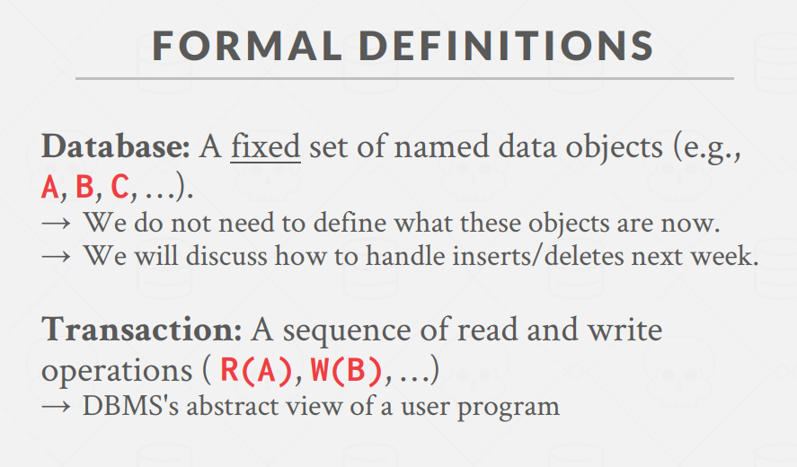
我们用 \(A,B,C\) 来表示
database 中的数据对象 data object，用 \(R(X),W(X)\) 来表示对对象 \(X\) 进行读取和写入操作
在 SQL 中，txn 开始于 begin
字段，结束于 commit 或 abort 字段
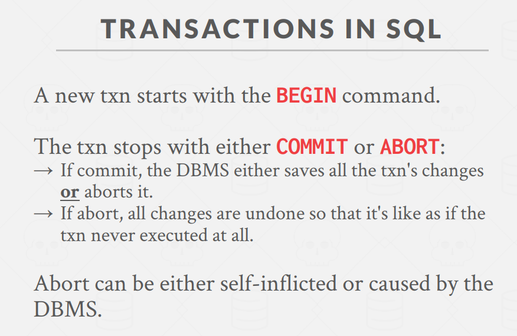
transaction 正确性的评价标准为
ACID，具体为：
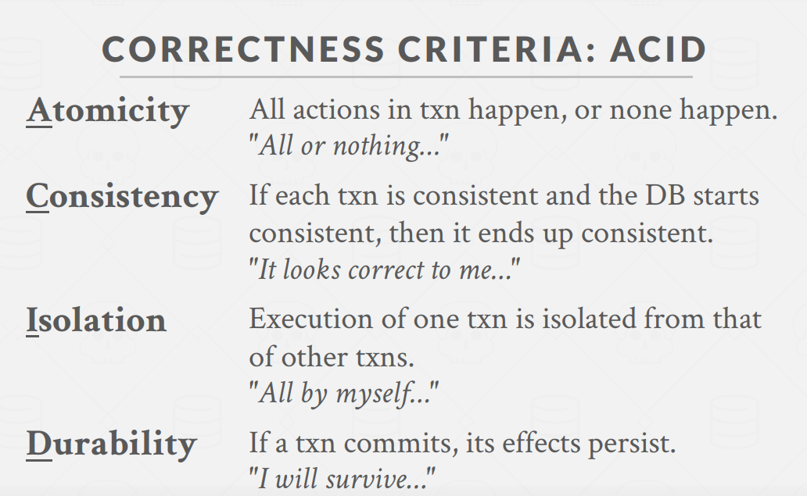
Atomictiy
Atomicity 是指，txn
的所有操作要么被全部执行（对应
commit），要么全部没有执行（对应
abort）。一个 txn 被 abort
的对象，既可以是用户，也可以是系统。
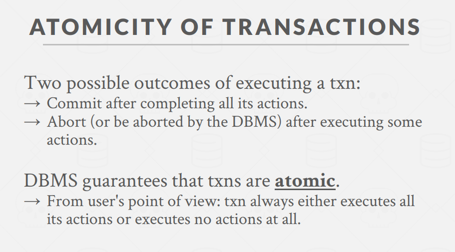
实现 Atomicity 的方法有两种：
Logging：DBMS在事务执行的过程中，每一步都会记录「如果要撤销这一步该怎么办」。这样的话如果事务被abort，DBMS也可以做到对已执行的操作进行撤销undo。这种日志被称为回滚日志undo-log，在内存和硬盘中同时存在
实际上，在我们对 tuple 的存储结构中，除了使用
slotted plag 以外，还可以使用
log structured。也就是我们每次对 tuple
的更新都只将操作类型和具体的更新数据写入内存，并不会实际去更新对应的
tuple。这样当我们需要撤销某个操作时，直接将先去的
log 给删去即可
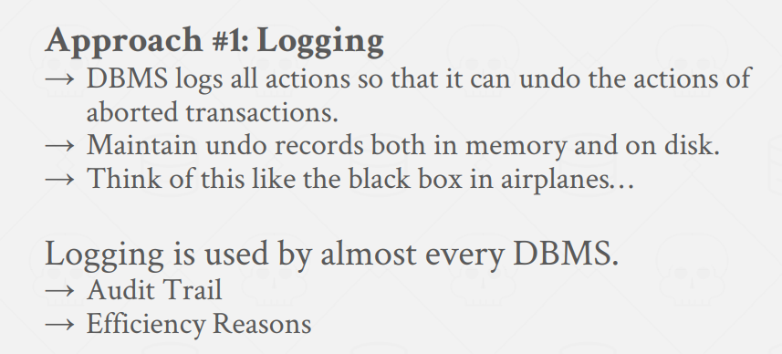
Shawod Paging：对于那些txn要修改的page，我们专门复制一份让其修改，等到txn提交后再将这些page替换回去
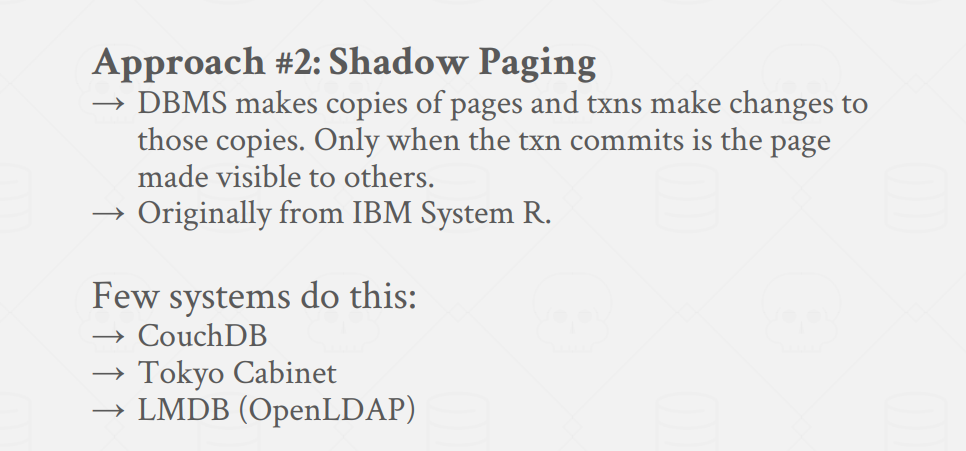
这种思想本质上和 strawman
的一样，由于开销过大，因此很少系统会支持这种方法
Consistency
由 database 所表示的「世界」在逻辑上
logical
是正确的，因此所有关于数据的询问所得到的结果也应该在逻辑上是正确的
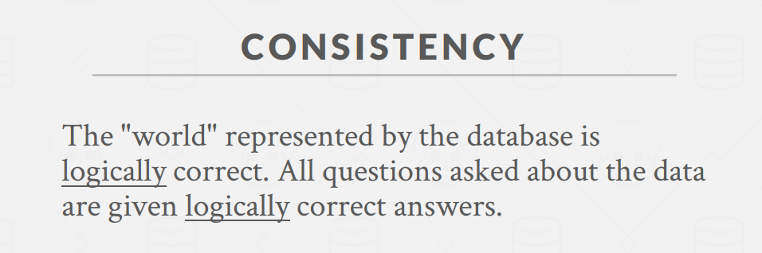
Consistency 分为两部分：
Database Consistency
数据库表示现实世界中的实体必须要遵循其本身的约束。例如，如果表示年龄的话那么就不能为负数。此外，在未来的事务应该能看到过去已执行的事务的结果
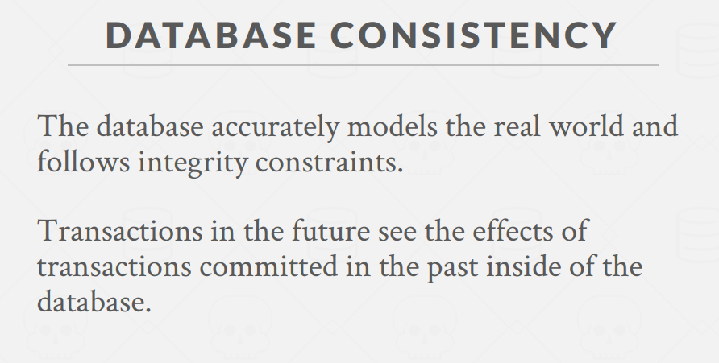
Transaction Consistency
如果数据库在 txn 开始前是一致的
consistent，那么在事务结束后也应当是一致的
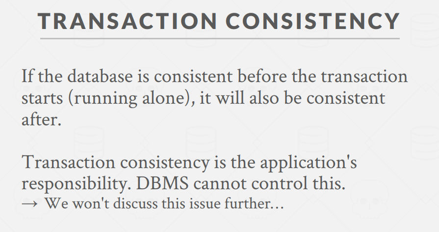
Isolation
Concepts
DBMS 会提供一种假象
illusion，使得每个事务都认为整个系统中只有它本身在运行。因此，每个事务只需要考虑数据库在事务开始时候的状态，而不需要考虑其他事务的执行是否会妨碍当前事务的执行
这种操作类似于操作系统的虚拟化，OS
本身没有那么大的内存空间，但它可以通过许多虚拟化的技术，让每个进程都认为自己能够使用
64 位的内存空间
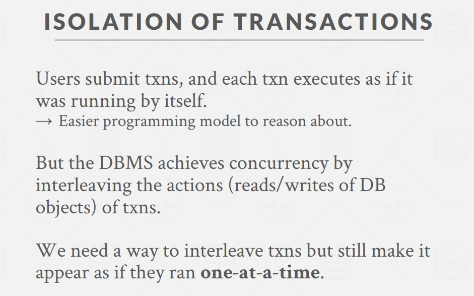
DBMS 通过运行不同事务中的操作交错
interleaving 执行来实现 concurrency。具体的
concurrency protocol 有两种实现方式：
Pessimistic：悲观地认为问题发生的概率大，做出额外的操作让问题不发生Optimistic：乐观地认为问题发生是少数的，当问题发生时再解决
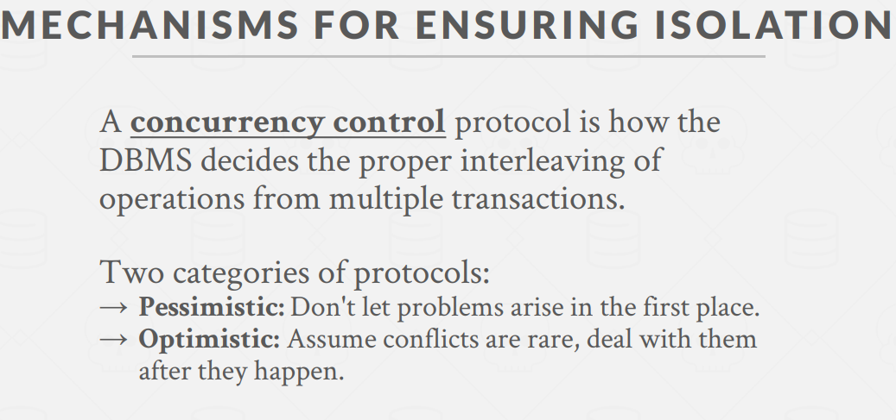
Example
我们考虑下面这个例子：
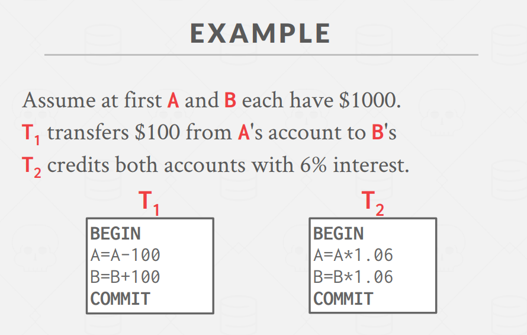
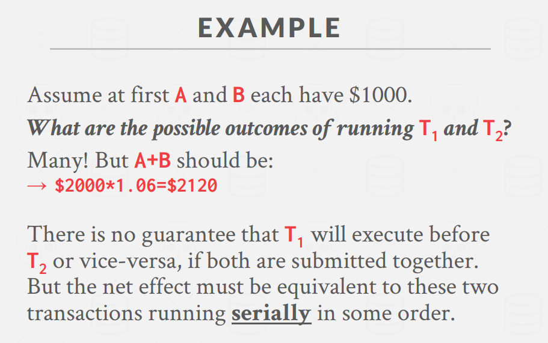
txn 执行的顺序有非常多，但如果想要最终的结果满足
consistency，就必须要保证这次执行的净效应
net effect 等价于两个 txn 顺序
serially 执行的 net effect
以下的两个执行都能产生相同的
logical outcome，因此它们是等价的
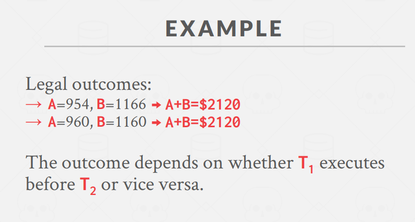
两个 txn 的调度图如下
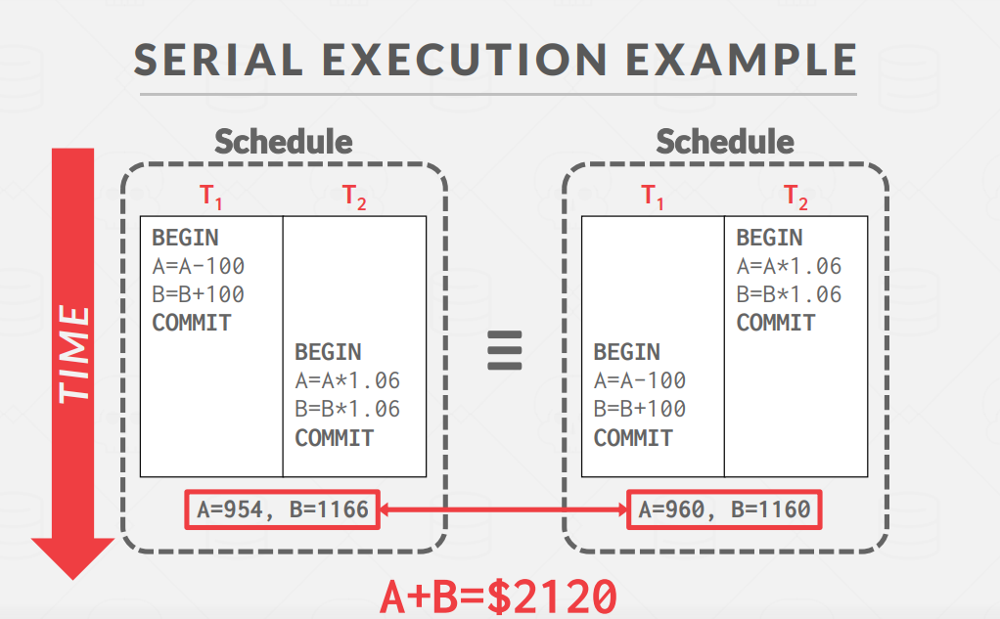
换句话说，两个 txn
的顺序执行是不会出现问题的
但为了提高磁盘的 I/O 以及提高 CPU
的利用率，我们需要让两个 txn 的执行产生
interleaving。这么做的好处是当一个 txn
需要等待某种资源时，系统内的其他 txn 可以继续执行
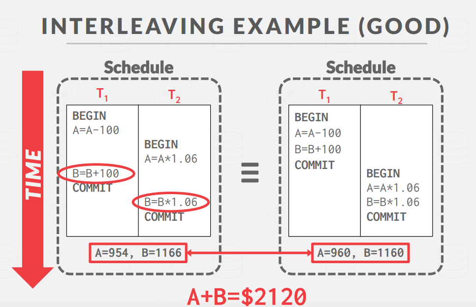
这种情况下，由于其最终结果等价于顺序执行的结果，因此
interleaving 不会产生问题
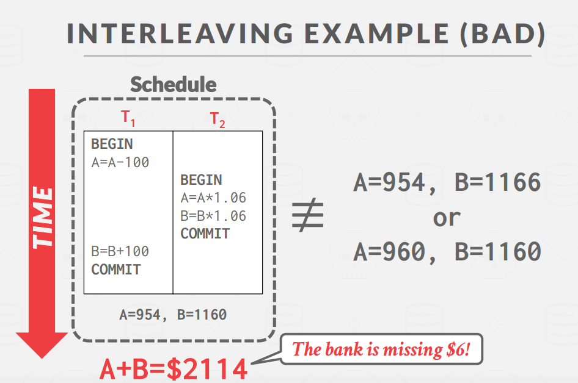
这种情况下，违背了 consistency，因此这应当被
undo
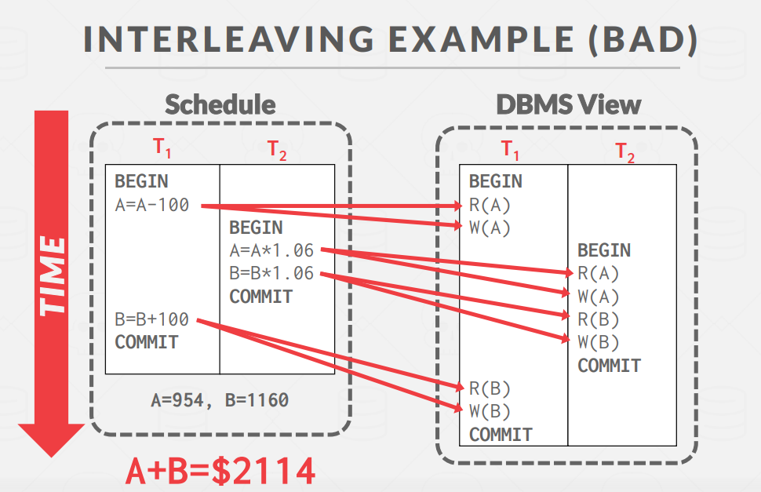
如果我们站在 DBMS 的视角来看待这个
schedule，会发现第二个 txn 对第一个
txn
的中间结果进行了读取，因此这便造成了最终结果的错误。因为如果两个
txn 是顺序执行的话，那么后执行的 txn
必然不可能会读取到前一个 txn
的中间结果，而我们想要的效果就是两个 txn
交叠后所产生的结果等价于两个 txn 顺序执行所产生的结果
Schedule
那么，现在我们的问题是，我们该如何判断一个调度 shcedule
算法的正确性
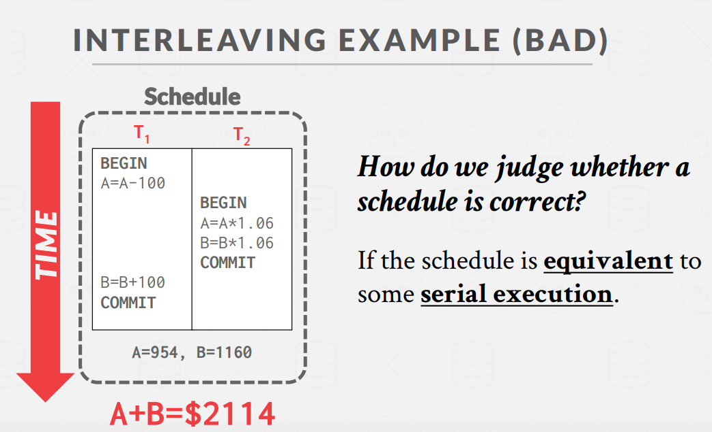
DBMS 执行操作的顺序被称为执行调度
execution schedule，我们的目标是生成与顺序执行
serial execution 等价的 execution schedule
在此之前，我们需要引入三个概念：
Serial Schedule序列化调度：调度shcedule是以序列化的形式执行的，不会interleaving两个不同txn的执行Equivalent Schedule等价调度：如果第一个shcedule所产生的结果与第二个shcedule所产生的结果相同，这两个schedule是等价的equivalentSerializable Schedule可序列化调度：如果一个schedule与一个serial shcedule相等价equivalent，那么该schedule为可序列化调度serializable schedule
原文如下：
• Serial Schedule: Schedule that does not interleave the actions of different transactions.
• Equivalent Schedules: For any database state, if the effect of execution the first schedule is identical to the effect of executing the second schedule, the two schedules are equivalent.
• Serializable Schedule: A serializable schedule is a schedule that is equivalent to any serial execution of the transactions. Different serial executions can produce different results, but all are considered “correct”.
有了 serializable schedule
的概念后，我们可以很容易的判断一个 schedule
所产生的结果是否有效，只需要简单的判断其等价 schedule
是否是 serial schedule 即可
Conflict
那么现在的问题是，我们该如何判断两个 schedule
为等价的。为了实现这个目的，我们需要引入冲突 conflict
的概念
如果两个操作是 conflict，当且仅当：
- 它们来自两个不同的
txn - 它们作用于同一个对象，并且至少有一个是写入
我们可以很容易地枚举出所有 conflict
的情况，一共只有三种：
• Read-Write Conflicts (“Unrepeatable Reads”): A transaction is not able to get the same value when reading the same object multiple times.
• Write-Read Conflicts (“Dirty Reads”): A transaction sees the write effects of a different transaction before that transaction committed its changes.
• Write-Write conflict (“Lost Updates”): One transaction overwrites the uncommitted data of another concurrent transaction.
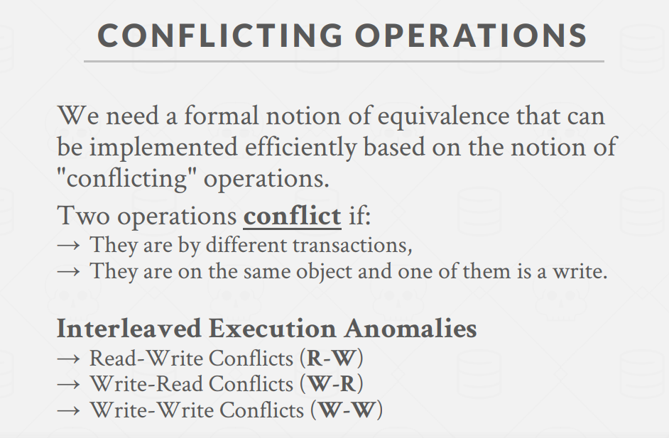
Read-Write Conflicts
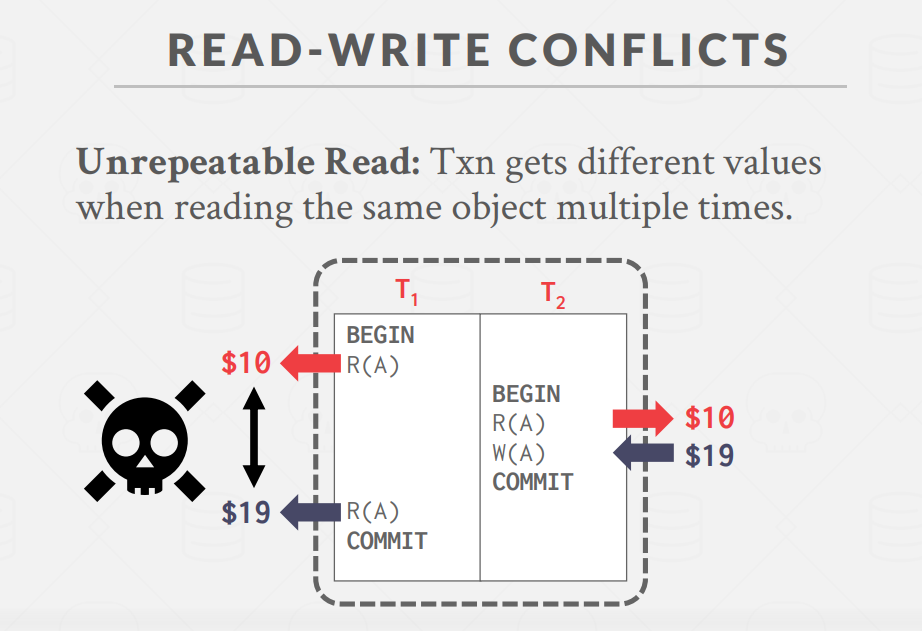
\(T_2\) 进行读取时，\(T_1\) 还没有提交，因此会导致错误的结果
Write-Read Conflicts
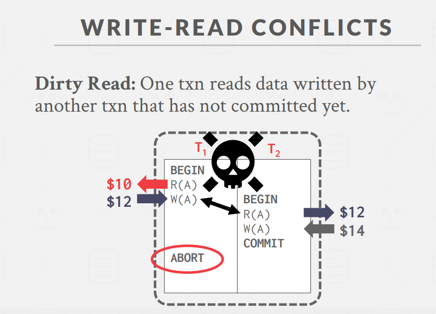
类似于第一个，\(T_2\) 读取了 \(T_1\) 还未提交的结果，如果 \(T_1\) 最终是
abort，那么同样会导致错误的结果
Write-Write Conflicts
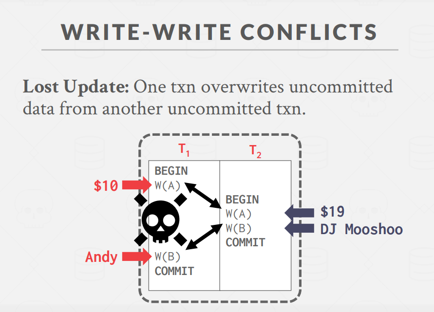
两个 txn 都对同一个对象进行写入，因此会造成覆盖写入
overwrite 的问题
Serializability
有了 conflict 的概念后，我们可以判断一个
schedule 的可序列化性
serializability。serializability
有两个等级：
Conflict Serializability：可理解为「基于冲突判断的可序列化性」View Serializability：可理解为「基于视图判断的可序列化性」
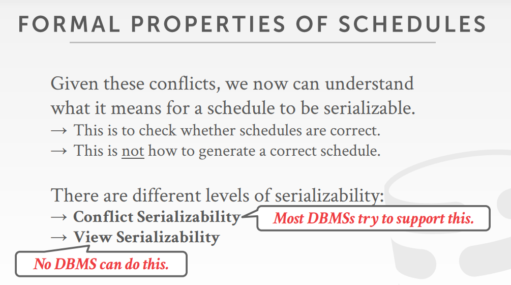
Conflict Serializablity
对于 conflict serializability 而言，如果两个
schedule 满足以下条件，则称它们为冲突等价
conflict equivalent
- 两个
schedule在相同的txn中具有相同的action - 每一对
conflict action都以相同的顺序组织
如果一个 schedule \(S\)
满足以下条件，则称它为冲突可序列化
conflict serializable
一个
schedule由多个txn组成，这里我们只考虑两个的情况
- \(S\) 冲突等价
conflict equivalent于serial schedule - 我们可以通过在 \(S\) 的两个不同的
txn中交换连续的non-conflict operation，将 \(S\) 转换为serial schedule
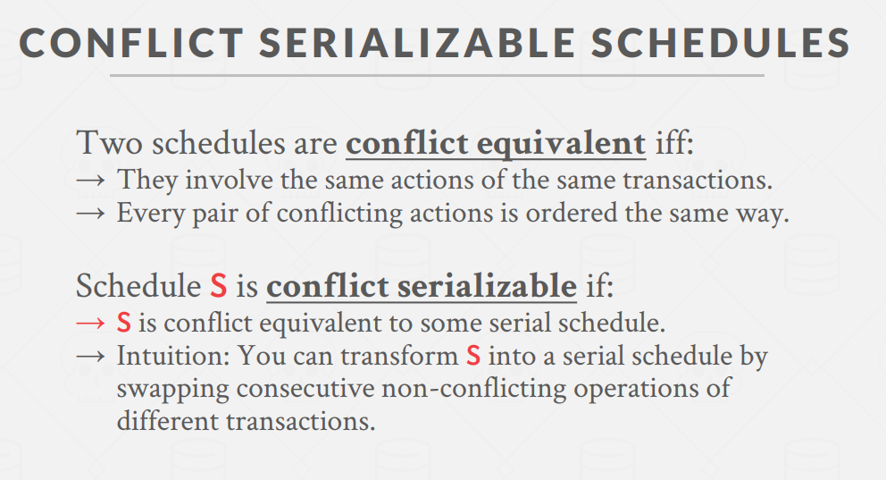
我们简单总结一下：
- 我们首先知道一个
serial schedule是一定满足条件的，因此我们需要判断一个schedule是否与serial schedule互为equivalent schedule - 在此我们引入了
conflict的概念，如果一个schedule与一个serial schedule互为conflict equivalent，那么我们可以认为它们互为equivalent schedule - 而为了判断
conflict equivalent，我们需要判断该schedule是否满足conflict serializable
Example
举个例子：
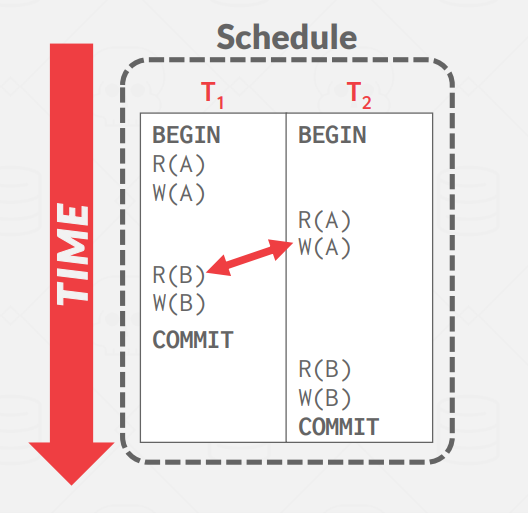
\(R(B)\) 与 \(R(A)\)
对不同对象进行操作，不满足
conflict，因此我们可以将其执行顺序进行交换，得到下图：
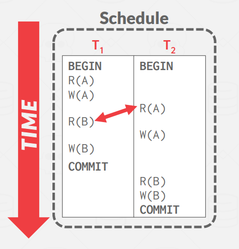
同理，\(R(B)\) 与 \(R(A)\)
也是对不同对象进行操作，因此也不是
conflict，可以交换：
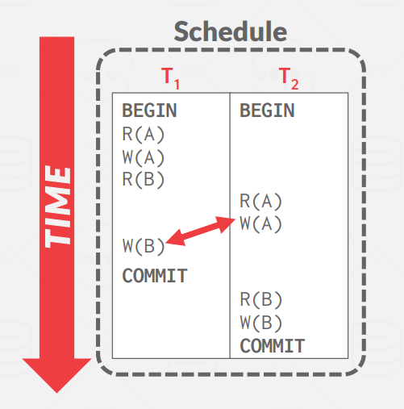
\(W(B)\) 与 \(W(A)\)
作用于不同对象，也不是
conflict，可以交换：
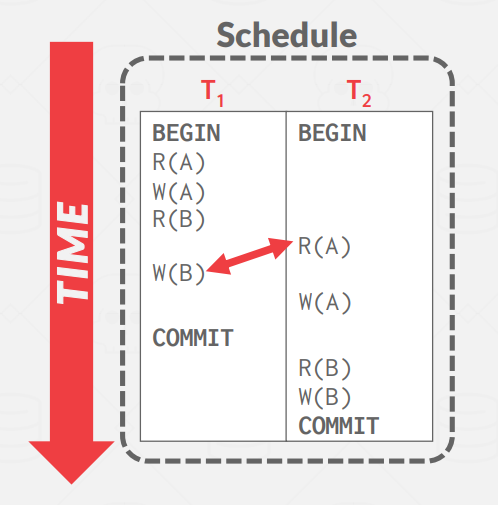
最后，我们交换 \(W(B)\) 和 \(R(A)\)，得到最终结果：
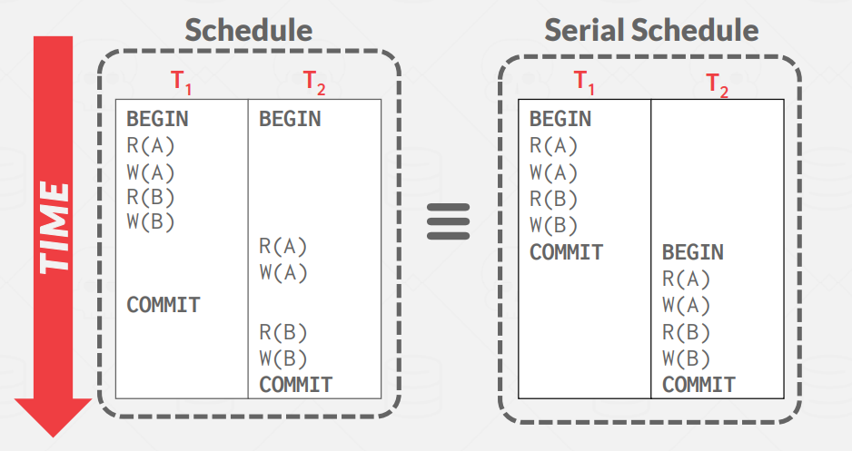
因此，原先的 schedule 与一个
serial schedule 是
conflict equivalent，也就是二者等价
我们来看另外一个例子：
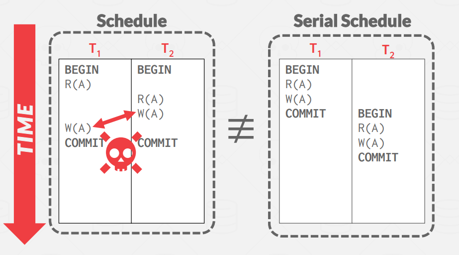
由于 \(W(A)\) 和 \(W(A)\) 互为
conlict，因此我们不能将其交换，换句话说左边的
schedule 无法转换成右边的 serial schedule
这种算法对于两个事务 transaction, txn
的情况很容易，但对于多个 txn 的处理则较为棘手
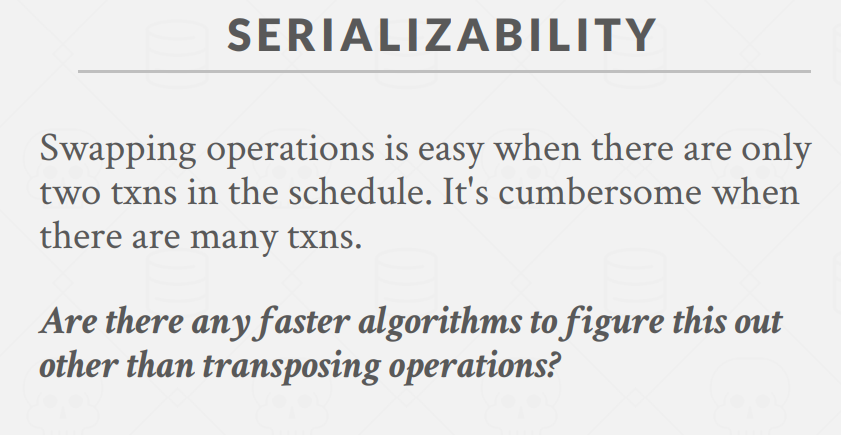
为了解决这个问题，再次我们引入依赖图 dependency graph
来判断多个 txn 之间的调度是否等价于一个
serial schedule
Dependency Graph
对于两个 txn 而言，从 \(T_i\) 指向 \(T_j\) 的边 edge 定义为：
- \(T_i\) 中的操作 \(O_i\) 与 \(T_j\) 中的操作 \(O_j\) 构成
conflict - 操作 \(O_i\) 出现在操作 \(O_j\) 之前
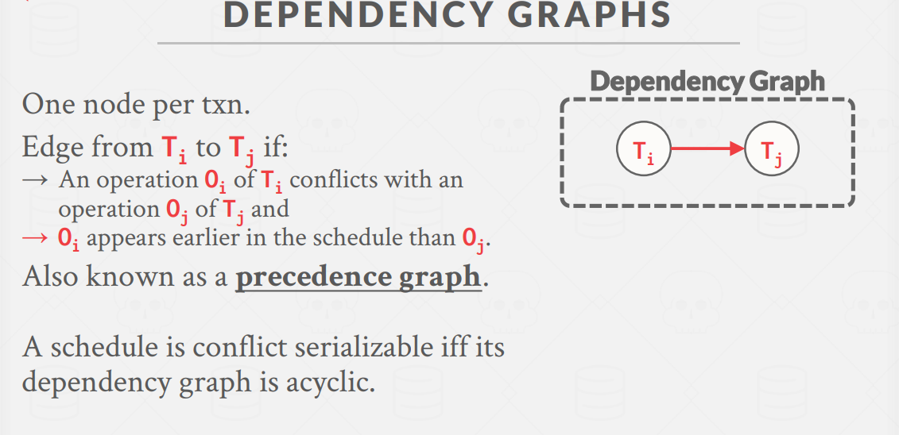
如果一个 schedule 是
conflict equivalent，当且仅当整个
dependency graph 是无环的
acyclic
举个例子：
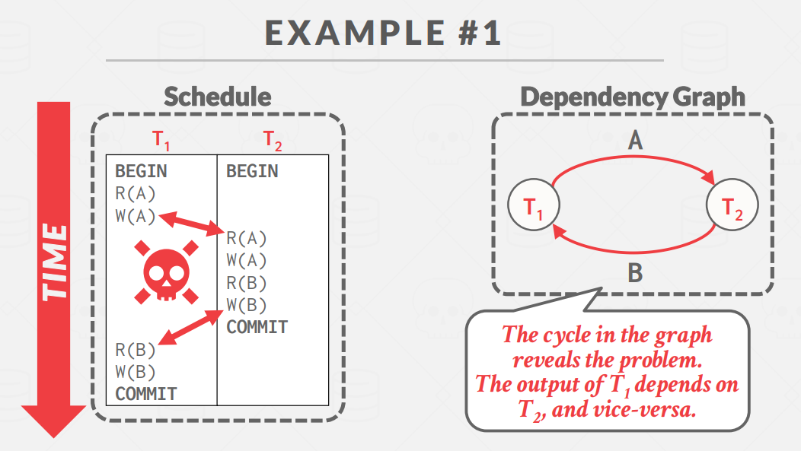
由于 \(W(A)\) 与 \(R(A)\)
是对同一个对象进行操作，并且有一个是写入，因此二者为
conflict；由于 \(W(A)\)
出现在 \(R(A)\) 的前面，因此 \(T_1\) 会有一条指向 \(T_2\) 的边
由于 \(W(B)\) 与 \(R(B)\) 也是 conflict，并且
\(W(B)\) 在 \(R(B)\) 之前指向，因此 \(T_2\) 会有一条指向 \(T_1\) 的边
由于图中存在环，因此该 schedule 不是
conflict equivalent
另外一个例子：
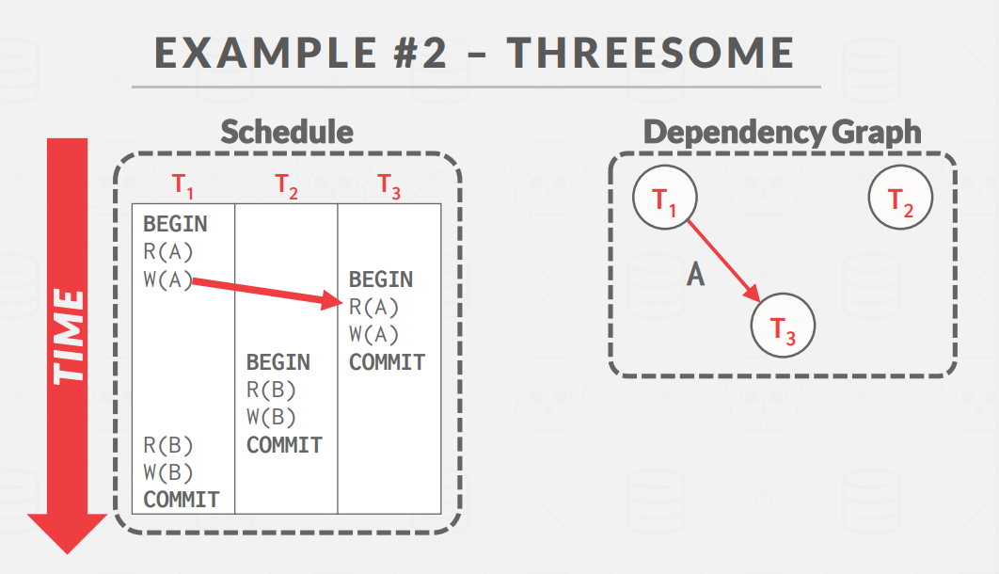
由于 \(T_1\) 与 \(T_3\) 的操作中满足
conflict，并且 \(T_1\)
的操作先于 \(T_2\) 的操作，因此 \(T_1\) 会指向 \(T_2\)
注：实际上，只要在 \(T_1\) 的执行过程中，\(T_3\) 也在执行，并且 \(T_1\) 的某些操作与 \(T_3\) 的某些操作满足
conflict，就可以认定二者之间一定存在一条边，并不需要这些操作满足什么顺序：
\(T_1\) 的 \(R(A)\) 可以与 \(T_3\) 的 \(W(A)\) 造成
conflict\(T_1\) 的 \(W(A)\) 也可以与 \(T_3\) 的 \(R(A)\) 造成
conflict\(T_1\) 的 \(W(A)\) 也可以与 \(T_3\) 的 \(W(A)\) 造成
conflict
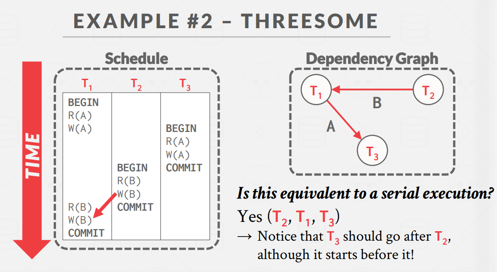
需要说明的是，使用 dependency graph
得到的结果有时不一定是正确的，这里我们与后面的
view serializability 的例子一起说明
View Serializability
由于没有系统支持这个，因此我们把注意力主要集中在后面的例子上，用于说明
dependency graph 有时会产生错误的结果
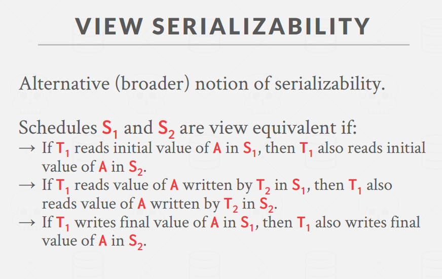
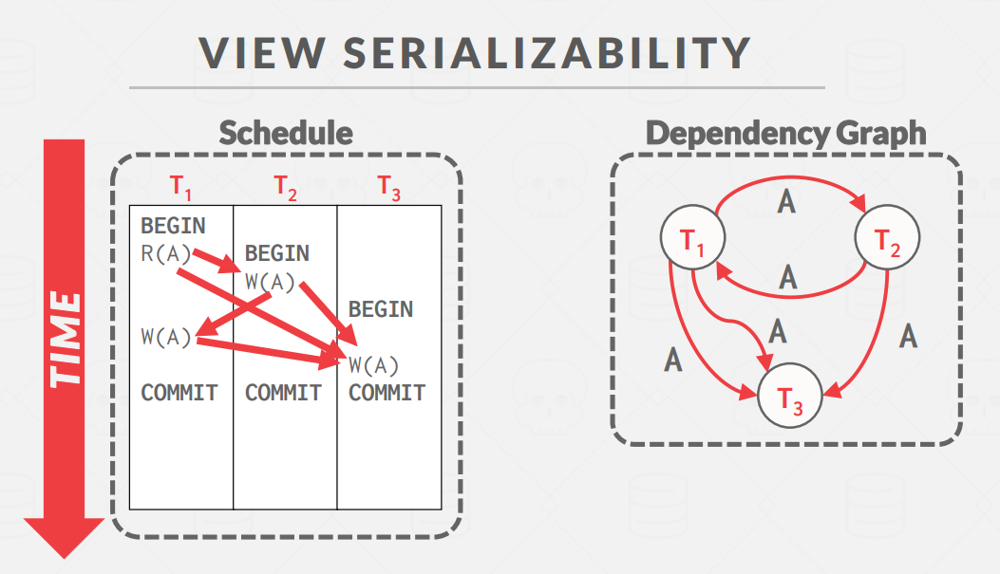
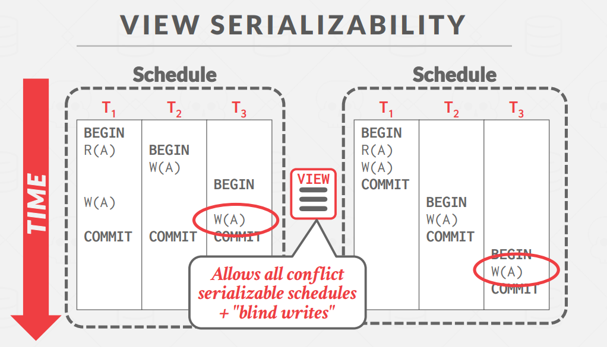
在这个例子中，我们看出，dependency graph
是有环的，也就是说这个 schedule 不是
conflict equivalent。但是，由于 \(T_3\) 对于 \(A\)
的写入是最后执行的，因此这会覆盖前面的两次写入。换句话说，哪怕这不是与序列化调度
serial shcedule 冲突等价
conflict equivalent，它依旧等价于序列化调度
serial schedule
view serializability 相比于
conflict serializability 而言，对于 schedule
的限制更松，因此其有效执行 enforce effectily 也非常困难
这两种方式都无法直接给出一个 schedule 一定等价于
serial schedule，这是因为它们并不理解操作或者数据的含义（最后一个例子）。而
conflict serializability
被更多的系统所使用，原因在于这更容易实现
Universe on Schedule
所有的 schedule 的 venn graph 如下：
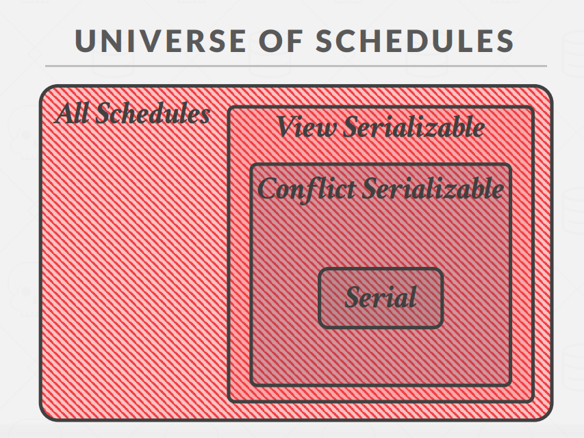
Durability
所有已提交的 txn 所造成的改变应当是永久的
persistent，即：
- 不存在断裂的
torn更新（也就是只更新一半） - 不允许一个已经
abort的事务对系统进行更新
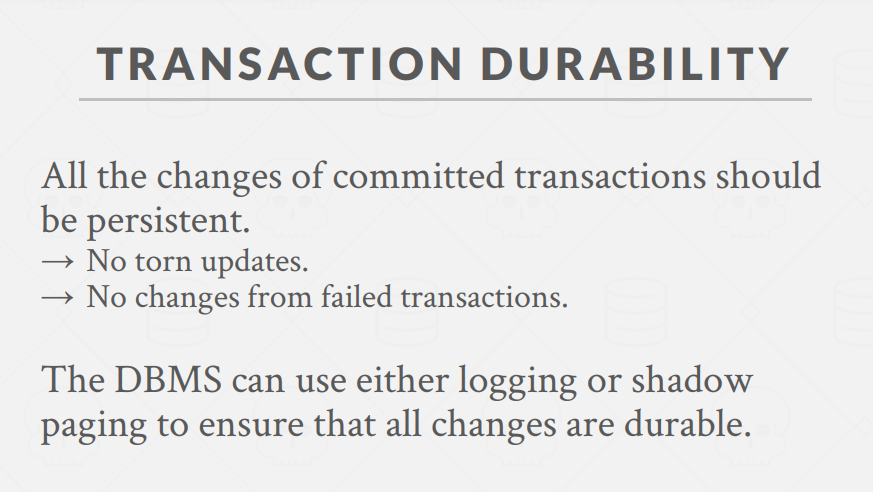
Conclusion
总结如下：
在实际的事务执行过程中，concurrency control
是自动进行的，这样可以减去事务编写的压力
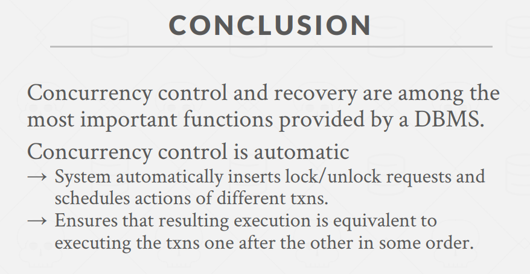
Two-Prase Locking (2PL)
Intro
在有了 conflict serializable
的概念后，我们已经可以判断一个 schedule 是否等价于
serial schedule。但这有一个问题是，我们需要执行一遍这个
schedule 才能知道到底是否等价（我们需要对某些
non-conflict 操作进行
swap）。我们现在的问题是，能否有一种办法能够在不实际执行的情况下，保证这个
schedule 等价于 serial schedule
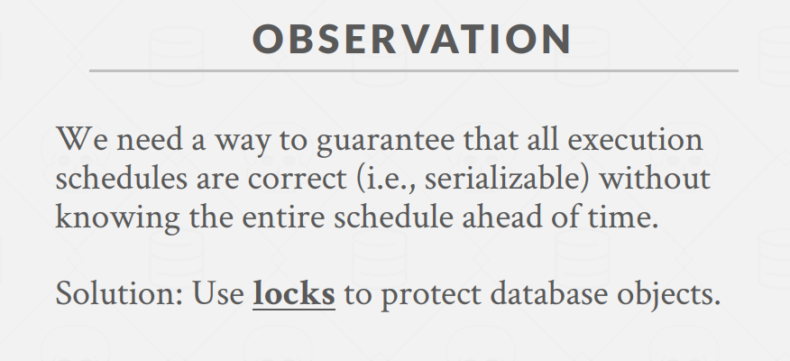
一个朴素的加锁方案如下：
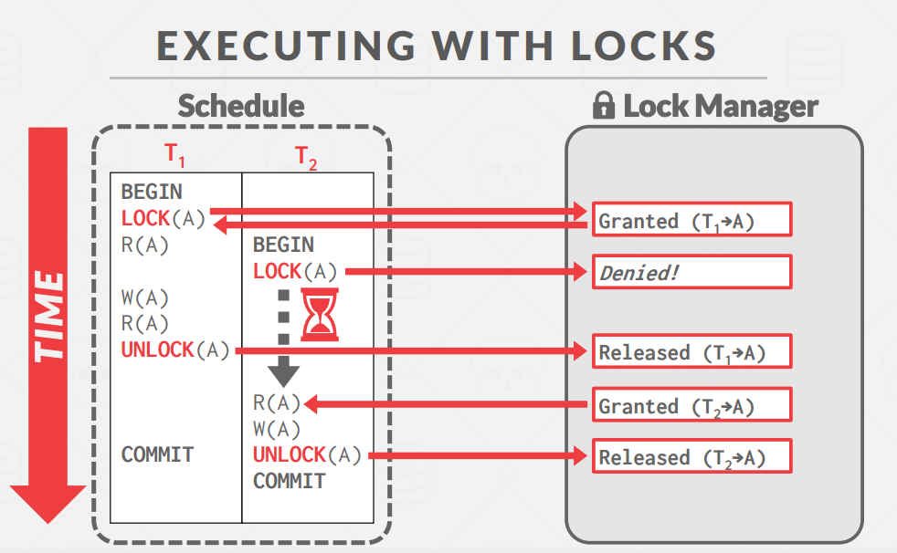
每次需要对 share resource
进行读取或写入等操作时，都需要进行 lock
；在操作完毕后，马上 release
Lock 和 Latch 的区别如下：
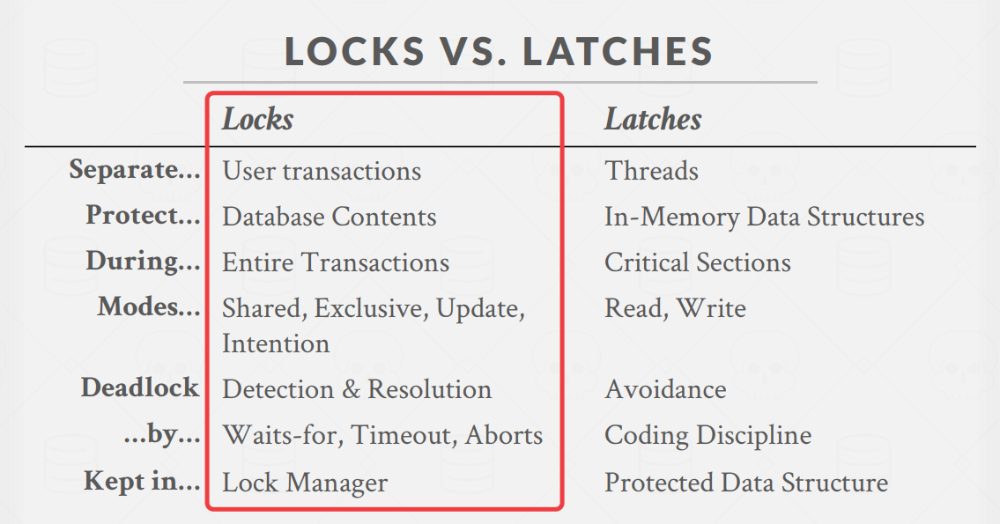
Type of Lock
Lock 有两种基本的 type，分别为：
• Shared Lock (S-LOCK): A shared lock that allows multiple transactions to read the same object at the same time. If one transaction holds a shared lock, then another transaction can also acquire that same shared lock.
• Exclusive Lock (X-LOCK): An exclusive lock allows a transaction to modify an object. This lock prevents other transactions from taking any other lock (S-LOCK or X-LOCK) on the object. Only one transaction can hold an exclusive lock at a time.
在引入 lock 之后，txn 的执行过程如下：
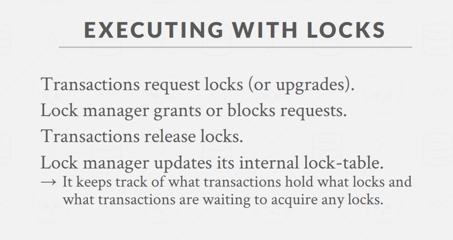
txn首先请求locklock manager授予grant或阻塞block该txntxn释放locklock manager更新内部的lock table
如果我们在 schedule 内单纯使用
lock，实际上是无法避免 conflict 的：
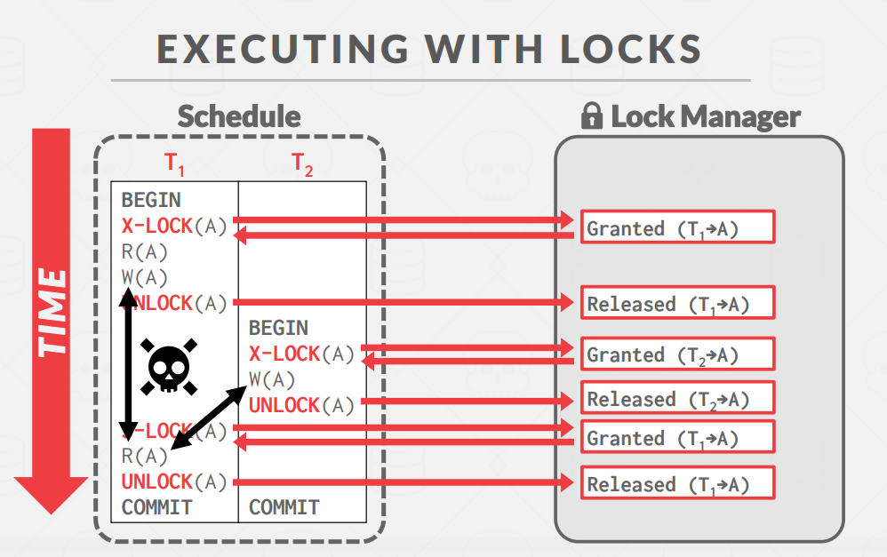
在这个例子中，我们第一次在使用完 \(A\) 之后释放了锁，然后 \(T_2\) 就对 \(A\) 进行了 overwrite，而 \(T_1\) 之后还会对 \(A\) 进行一次写入，这将导致了
conflict
在此，我们引入两阶段锁 two-phase locking (2PL)
来解决这个问题
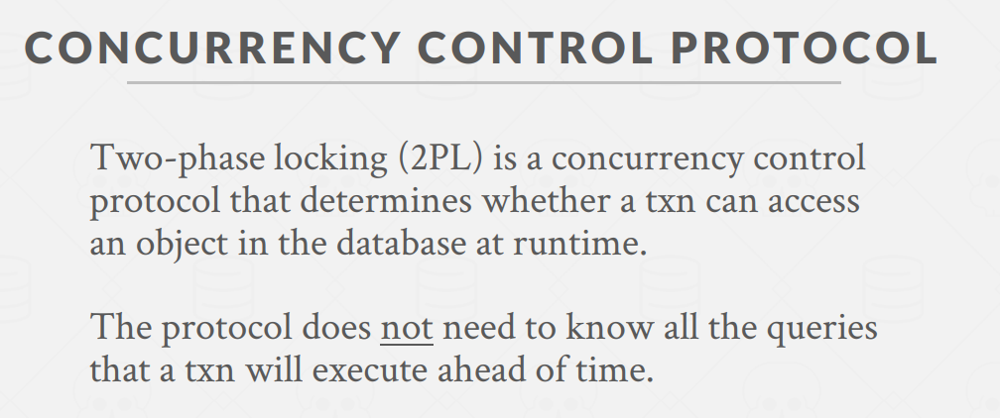
Concept
Two-Phase Locking (2PL) 的概念如下：
Two-Phase locking (2PL) is a pessimistic concurrency control protocol that uses locks to determine whether a transaction is allowed to access an object in the database on the fly
需要说明的是，2PL 是针对 txn 的，而一个
schedule 中会有多个 txn 交叠执行。对于
lock 的获取与释放，2PL
将其划分为两个阶段：
Growing Phase：txn在这个阶段中只能获取lock。如果已经对某个资源执行完操作后，不能释放lockShrinking Phase：txn在这个阶段中只能释放lock
举个例子，如果某个 txn 需要依次操作对象 \(A,B,C\)，那么在操作对象前，就需要获取该对象的
lock。如果某时刻已经对 \(A\) 操作完毕，但还没有对 \(C\) 操作，那么 \(A\) 的 lock
就不能释放，因为此时还处于 growing phase。只有当 \(C\) 的 lock
已经获取完毕后，我们才可以释放已经执行完毕的对象的
lock
在 shrinking phase
中，呈阶梯下降的原因是他会依次释放已经执行完毕的资源的
lock
上面那个例子中，我们引入 2PL 后，结果如下：
在第一次对 \(A\) 执行完 \(R\) 和 \(W\) 后，由于之后还需要对 \(A\) 执行操作，因此我们不会在这个时候释放
lock，而是等到对 \(A\)
执行完所有操作后再释放。这样可以避免出现 conflict
2PL 可以保证所产生的 dependence graph
是满足 acyclic，但 2PL 却会导致级联终止
cascading aborts
我们看下面这个例子：
\(T_1\) 已经对 \(A\) 执行完所有操作并且释放了 \(A\) 的 lock，而此时 \(T_2\) 则开始对 \(A\) 进行读取和写入。如果之后 \(T_1\) 被 abort，那么这就会导致
\(T_2\) 也需要被
abort。因为 \(T_2\)
读取了一个本不该被读取的值（这被称为
dirty read）。实际上，这个 abort
可以一直传递下去，这便是 cascade
除了 cascading abort，2PL 还会导致
deadlock 的问题
- 为了解决
cascading abort，我们引入Strit 2PL - 为了解决
deadlock，我们引入detection和prevention
Strong Strict 2PL
strict schedule 和 strong strict 2PL
的定义如下：
A schedule is strict if any value written by a transaction is never read or overwritten by another transaction until the first transaction commits.
Strong Strict 2PL (also known as Rigorous 2PL) is a variant of 2PL where the transactions only release locks when they commit.
我们在 txn 提交的时候再释放所有的
lock，这便是
strong strict 2PL，这么做的好处有两点：
- 可以避免
cascading abort - 对于那些已经
abort的txn而言，我们只需要恢复最开始的那个txn开始时的状态，而不需要去关注中间那些txn所造成的改变。换句话说，我们需要记录的仅仅是这个txn开始时的状态，如果这个txn一旦发生abort，那么我们直接恢复到那个状态即可
举个例子：
不引入 2PL，则可能会导致出错：
引入 2PL，但有可能导致
cascading abort（但这里并没有显示出来），运行结果如下：
引入 Strong Strict 2PL，其结果如下：
我们加入 2PL 后，schedule 的整体
veen 图如下：
Detection & Prevention
下面是关于 Detection 和 Prevention
的内容：
实际上，哪怕我们引入了 Strong Strict 2PL，我们还是会遇到
deadlock 的问题，也就是下图：
哪怕我们的加锁方式满足
2PL，但我们依然有可能会出现循环等待
解决方法如下：
Detection
死锁检测是指，我们在发生了 deadlock 的时候，考虑去将
deadlock 给打破
Concept
我们创建一个 warts-for graph，用于记录每个
txn 需要等待的 lock，图满足如下条件：
- 每个节点都是
txn - 从 \(T_i\) 指向 \(T_j\) 的边，表示 \(T_i\) 等待 \(T_j\) 释放
lock
如果图中存在环，则说明发生死锁。此时系统需要判断该如何打破这个环。需要注意的是，以何种频率去检测这个环和死锁发生直到被打破的时间之间，是一个
trade-off
我们看一个例子：
\(T_1\) 在等待 \(T_2\) 释放
lock，因此会有一条从 \(T_1\) 指向 \(T_2\) 的边；同理，\(T_3\) 在等待 \(T_1\)，因此会有一条从 \(T_3\) 指向 \(T_1\) 的边
Handing
当我们检测到环时，则需要选择一个 victim txn 来进行回滚
rollback。而被选中的 txn 要么重启要么
abort
关于这个 victim txn
的选择，我们需要考虑的因素有很多，原因在于我们希望 rollback
这个 txn 对系统造成的开销尽可能小，需要关注的点如下：
- 这个
txn的起始时间（我们不希望选择一个已经执行了很长时间的txn） - 这个
txn已经执行了多少语句（我们不希望选择一个已经执行了很多语句的txn） - 这个
txn已经获取了多少lock（我们希望选择一个获取了更多lock的txn，因为让它rollback后，系统中的其他txn在执行时被阻塞的概率会降低） - 如果选择这个
txn，那么我们需要rollback多少txn（我们也是希望选择一个尽可能少rollback的txn）
在我们选定一个 txn 之后，有两种 rollback
策略：
注：我们
rollback的对象是这个txn中的操作，我们不会rollback其他的txn，这里要与cascading aborts区分
Completely：完全回滚，我们将这个txn，使其好像没有被执行过Partial：部分回滚，我们只rollback该txn的部分操作，使得graph中的环被打破即可
Prevention
死锁预防是指，我们会尽力去避免 deadlock 的发生
如果某个 txn 试图去获取一个已经被其他 txn
获取过的 lock，由于这种操作有可能会导致
deadlock，因此我们直接将这个
txn（或者那个获取了 lock 的 txn）
给 abort
可以看出，
detection为optimistic，prevention为pessimistic
由于我们可以 abort
的对象有两个，因此这便引申出两种不同的策略：
- 我们会依据时间戳
timestamp来为每个txn赋予优先级。时间戳越早优先级越大 Wait-Die：如果高优先级的txn请求低优先级的txn，那么高优先级的等待；如果低优先级的txn请求高优先级的txn，那么低优先级的abortWound-Wait：如果高优先级的txn请求低优先级的txn，那么低优先级的abort；如果低优先级的txn请求高优先级的txn，那么低优先级的等待
需要说明的是，我们
abort的对象只能是低优先级的txn。换句话说，高优先级的txn要么执行，要么等待；而低优先级的txn要么执行，要么等待，要么abort
- 在
Wait-Die中，只会出现高优先级等待低优先级，不会出现低优先级等待高优先级- 在
Wound-Wait中，只会出现低优先级等待高优先级，不会出现高优先级等待低优先级即，等待的方向总是单向的
我们看一个例子：
由于 \(T_1\) 的执行先于 \(T_2\) 的执行，因此：
- 在
Wait-Die下，我们会优先保证 \(T_2\) 的执行，也就是 \(T_1\) 在无法获取lock时，我们会阻塞 \(T_1\) - 在
Wound-Wait下，我们会优先保证 \(T_1\) 的执行，也就是 \(T_2\) 在尝试获取lock时，我们会直接abort掉 \(T_2\)
关于 Prevention，有两点需要注意：
- 采用这种方法后，我们等待的方向只有一个，因此在图中不会出现环
- 当一个
txn重启后，我们不能改变其优先级，否则会出现饥饿starve的情况
Hierarchical Lock
Lock Granularity
在讨论完 2PL 后，我们接着讨论一下锁的细粒度
lock granularity
当某个 txn 试图修改很多个 tuple
时，由于每一个 tuple 都需要有一个 lock
来保护，因此这个 txn 便需要不断地获取
lock，这会造成很大的性能开销
因此，我们可以加大锁的粒度
granularity，对更大范围的对象（attribute, tuple, page, table）提供更高层次的
lock，用于减少 lock 的获取
锁的细粒度之间的 trade-off
体现在，如果细粒度过大，那么系统的并发性会降低；如果细粒度过小，那么获取
lock 的次数会增大
锁的层次结构 Lock Hierarchy 如下:
- Database level (Slightly Rare)
- Table level (Very Common)
- Page level (Common)
- Tuple level (Very Common)
- Attribute level (Rare)
当我们需要获取某一节点的 lock
时，需要检测其所有子节点的 lock
是否被获取，如果没有那么我们才可以获取该节点的
lock。也就是，我们需要遍历其所有的子节点
Intention Lock
遍历所有子节点的开销过大，我们在此引入 Intention Lock
的概念
Intention locks allow a higher level node to be locked in shared mode or exclusive mode without having to check all descendant nodes. If a node is in an intention mode, then explicit locking is being done at a lower level in the tree.
• Intention-Shared (IS): Indicates explicit locking at a lower level with shared locks.
• Intention-Exclusive (IX): Indicates explicit locking at a lower level with exclusive or shared locks.
• Shared+Intention-Exclusive (SIX): The sub-tree rooted at that node is locked explicitly in shared mode and explicit locking is being done at a lower level with exclusive-mode locks.
意象锁 intention lock 分为三类：
Intention-Shared：表明对于当前节点和其部分子节点将被显式锁定为SharedIntention-Exclusive：表明对于当前节点和其部分子节点将被显式锁定为ExclusiveShared+Intention=Exclusive：表明对于当前节点被显式锁定为Shared，其部分子节点将被显式锁定为Shared或Exclusive
各个锁之间的互斥关系如下：
Intention Lock
的关键在于，我会对当前节点的部分子节点施加什么类型的
lock，因此：
- 对于
IS而言，说明当前节点和其部分子节点将会被显式锁定为shared，而其他的节点将不受影响。因此我们可以获取在其基础上IS, IX, S, SIX - 对于
IX而言，说明当前节点和其部分子节点将会被显式锁定为exclusive，所以我们可以获取IS, IX，但我们无法获取S, SIX, X。因为S, SIX, X均不能与X共存
具体的获取协议如下：
我们来看个例子：
\(T_1\)
将会读取和更新，因此它对上层节点获取
SIX，这说明当前这棵树的根节点为锁定为
shared，其子节点将被锁定为
exclusive
\(T_2\) 只会读取某些
tuple，因此需要对根节点获取 IS，这可以与
SIX 共存
由于 \(T_3\) 需要读取所有的
tuple，这不满足只对部分进行操作，因此我们需要获取
S，者将被阻塞
当 \(T_2\) 执行完毕后，根节点的
SIX 锁被释放，\(T_3\)
才可以开始执行
在我们引入 Intention Lock 之后，不同的 lock
之间便有了细粒度 granularity 的区别
DBMS 将会自动转换 lock
的细粒度，这样可以避免多次获取较低细粒度的锁
Timestamp Ordering (T/O)
关于 T/O 的定义，lecture notes
中给出的说明很精辟：
Timestamp ordering (T/O) is an optimistic class of concurrency control protocols where the DBMS assumes that transaction conflicts are rare. Instead of requiring transactions to acquire locks before they are allowed to read/write to a database object, the DBMS instead uses timestamps to determine the serializability order of transactions.
我们会对每个 txn \(T_i\) 分配一个唯一固定的
timestamp \(TS(T_i)\)，并且 timestamp
是单调递增的
关于 timestamp 的实现，有许多的方式：
- 使用系统时钟
system clock，但二月的天数会发生改变，因此会有边界问题 - 使用逻辑计数器
logical counter，但问题在于随着时间的累加这会导致溢出；并且在分布式系统中我们需要跨越多个机器来维护计数器 - 使用二者的混合
hybrid
Basic Timestamp Ordering (T/O) Protocol
我们不使用 lock 来读取或写入数据，我们通过对每个对象
object 赋予一个 timestamp 来序列化
txn 的执行
- \(W-TS(X)\) 表示对于对象 \(X\)，上一个成功执行的读取事务的
timestamp - \(T-TS(X)\) 表示对于对象 \(X\)，上一个成功执行的写入事务的
timestamp
我们的原则是，不允许 txn
访问未来读取或写入过的对象
对于读取，规则如下：
- 如果当前事务的 \(TS(T_i)\)
小于读取对象的 \(W-TS(X)\)，说明我们在对一个已经在未来修改过的对象进行读取，这是不允许的，因此我们需要
restart这个事务，并赋予一个新的timestamp - 否则，我们则对该对象进行读取，并将 \(R-TS(X)\) 更新为 \(\max(R-TS(X), TS(T_i))\)；随后在将 \(X\) 拷贝一份以便于 \(T_i\) 后续的读取（\(T_i\) 有可能会读取多次，我们不需要每次读取都做一次判断）
对于写入，规则如下：
- 如果当前事务的 \(TS(T_i)\)
小于该对象的 \(R-TS(X)\)
并且小于该对象的 \(W-TS(X)\)，那么说明我们在对一个已经在未来读取过并且写入过的对象进行修改，这同样是不允许的，因此我们需要
restart这个事务，并赋予一个新的timestamp - 否则，允许 \(T_i\) 去写入 \(X\) 并更新 \(W-TS(X)\)；随后拷贝一份 \(X\) 以便后续 \(T_i\) 的读取
我们来看一个简单的例子：
这里虽然 \(TS(T_1)\lt TS(T_2)\)，但不会发生冲突，因为读取冲突的对象是 \(W-TS(X)\)
Thomas Write Rule
对于写入的情况，原先的条件为：当满足 \(TS(T_i)\lt R-TS(X)\ \&\&\ TS(T_i)\lt
W-TS(X)\)，我们将 txn 给 abort
掉，我们将此条件修改为：
- 如果 \(TS(T_i)\lt
R-TS(X)\)，说明当前事务写入的对象在未来被读取过，而当前事务是要对该对象进行修改，那么我们只能将当前事务
abort掉以保证未来读取的值不会发生改变 - 如果 \(TS(T_i)\lt
W-TS(X)\)，说明当前事务写入的对象在未来被写入过，而由于当前事务对该对象的写入会被未来的那次写入所覆盖，因此我们可以之间忽略这次写入，继续执行当前事务
- 这虽然违背了 \(T_i\) 中的
timestamp，但由于后续 \(T_i\) 只会读取本地的值，因此不会产生什么影响
- 这虽然违背了 \(T_i\) 中的
- 如果不满足以上两个条件，那么我们更新 \(W-TS(X)\)
我们看个具体的例子：
\(T_1\) 先于 \(T_2\) 执行，因此前者的
timestamp
比后者小，我们最终要求得到的结果是与按序列化执行 \(T_1\) 和 \(T_2\) 的结果相同
这里发生了冲突，但我们直接忽略这条写入语句，继续去执行后续的读取。在执行读取的时候，我们会对
\(T_1\) 执行一次
abort，然后最终得到的结果等价于顺序执行 \(T_1\) 和 \(T_2\) 的结果
如果我们不采用 Thomas Write Rule，那么 T/O
得到的 schedule 就是 conflict schedule
的，因为这不会产生 deadlock（不会发生循环等待的情况）
但这依然存在问题：有可能会发生饥饿
starvation。考虑一个需要执行很长时间的
txn，那么它需要更新的对象必然会被后续的 txn
所更新，换句话说那些对象会具有更大的
timestamp，那么我们就需要去 restart 这个
txn 以保证 schedule
是顺序的。但如果不断地有「年轻」的 txn
到来，那么这个过程将会不断重复，这便导致了 starvation
Optimistic Concurrency Control (OCC)
OCC 的说明如下
Optimistic concurrency control (OCC) is another optimistic concurrency control protocol which also uses timestamps to validate transactions. OCC works best when the number of conflicts is low.
DBMS 会为每个对象创建一个 private
的工作区，所有对于该对象的修改都会作用于该 private
工作区内的对象，而不会作用于 global 的对象
当事务需要提交时，DBMS 会比较 private
工作区的
write set，去检查是否存在冲突。如果不存在冲突，那么向
global 对象进行写入
OCC consists of three phases:
Read Phase: Here, the DBMS tracks the read/write sets of transactions and stores their writes in a private workspace.
Validation Phase: When a transaction commits, the DBMS checks whether it conflicts with other transactions.
Write Phase: If validation succeeds, the DBMS applies the private workspace changes to the database. Otherwise, it aborts and restarts the transaction.
Read Phase
我们通过使用 read set 和 write set
来跟踪一个事务进行的读取和写入操作，并将这些对于对象的修改作用在
private 对象上
因此，在 read phase 中，txn
是会对对象进行读取和写入的，只不过是在
private 的工作区中
Validation Phase
当事务需要 commit 时，DBMS
会检查该事务的更改是否会与其他事务相冲突。我们只需要考虑
R/W 和 W/W 冲突。本阶段用于检测
valid 是否存在冲突，如果不存在则进行提交
validation 的方向有两种：
Backward Validation:from younger transactions to older transactionsForward Validation:from older transactions to younger transactions
Backward
我们检查当前事务的 read/write set
与前面已提交的事务的 read/write set
之间是否存在交集
Forward
我们将当前事务的 read/write set
与那些还没有提交事务的 read/write set
进行比对，求其交集
我们以 Forward Validation 为例，说明具体的
Validation 是如何进行的：
DBMS 会赋予每个 txn 一个
timestamp，如果该事务还没有 commit，那么其
timestamp 为 \(\infin\)
在 \(TS(T_i)\lt TS(T_j)\)
的情况下，如果以下三种情况满足，那么通过
Validation Phase：
- 如果 \(T_1\) 在 \(T_2\) 开始之前完成其所有阶段
- 如果 \(T_1\) 在 \(T_2\) 开始
write phase之前完成其所有阶段，并且 \(T_i\) 所写入的对象与 \(T_j\) 读取的对象没有交集- \(\text{WriteSet}(T_i)\cap \text{ReadSet}(T_j)=\phi\)
- \(T_i\) 在 \(T_j\) 完成其
read phase之前完成read phase，并且 \(T_i\) 所写入的对象与 \(T_j\) 读取或写入的对象没有交集- \(\text{WriteSet}(T_i)\cap \text{ReadSet}(T_j)=\phi,\ \text{and}\ \text{WriteSet}(T_i)\cap \text{WriteSet}(T_j)=\phi\)
Write Phase
如果 Validation 失败，那么需要
restart，否则需要对全局数据进行写入。写入分为两种：
Serial Commit：使用global latch来序列化所有的写入Parallel Commit：基于primary key的顺序来获取细粒度的latch，然后依次写入（细粒度本身就可以增大并发性）
在 write phase 中，我们会将 private
工作区内的更改同步到 global，使其变得可见
visable
Observation
由于 OCC 是 optimistic
类型的协议，因此我们会假设 conflict
是不常发生的。因此如果数据库非常大，或者其本身不是高度倾斜的，那么这种假设就会带来很大的性能损耗
具体的开销如下：
- 复制对象本身开销很大
Validation Phase和Write Phase存在性能瓶颈，因为这个部分的执行相对复杂- 因为如果检查失败，那么前面所做出的操作就全部浪费了，不像
2PL那样会阻塞
Isolation Level
我们目前所面对的并发都是事务内部，也就是，我们保证事务内部并发执行时，不会产生错误的结果。但是事务之间并发执行仍有可能会发生错误的结果：
问题在于，基于单个对象进行读取和写入的
conflict serialazability 想要保证
serializability
的前提是对象的集合是固定的。说人话就是，它只能保证对已经存在的对象的修改是序列化的，但无法检查已存在的对象是否发生过改变
解决方法如下：
Re-Execute Scan
对于事务中的每个查询，我们都会记录其扫描的集合。当事务提交的时候，我们再执行一次对于的操作，看结果是否发生变化
显然，这是一种最暴力的做法，因为这相当于我将一个事务执行了两次，效率并不高
Predate Locking
我们对不同的 SQL 语句进行加锁，对于
SELECT，加 S；而其他的，加 X
这种做法会破坏事务中语句执行的并发性
Index Locking
我们可以通过对索引 index
进行加锁，来解决事务间并发的问题
people 表的 schema
在上面有给出，这当中有一个 attribute，被称为
status
如果 status 这个属性存在索引的话，那么我们需要对包含
status = lit 的索引页进行加锁；如果索引中没有包含
status = lit
的项，那么我们需要对可能存在这一项的索引中的索引页进行加锁
如果这个属性没有索引，那么这个事务必须获取以下两种锁：
- 对表中的所有
page进行加锁 - 对这个表本身进行加锁
Index Lock Schema
下面我们简要介绍一下 index lock 的类型
Key-Value Lock
我们对索引中的 key 和 value 这一对
pair 进行加锁
Gap Lock
在两个 pair 之间，我们假定存在一个
gap，我们可以对这个 gap 加锁
Key-Range Lock
我们可以将二者结合起来，来对 key-value pair 和
gap 进行加锁
可以看到，下图中，我们还是对一个 key-value
进行加锁，只不过在其基础上加了一个 gap
加入了 gap lock 后，我们可以保证在当前的
key 之后，不会插入一个新的数据
Hierarchical Lock
由于 key-range lock 只是在 key
的基础上多加了一个
gap，那么我们可以进一步加大锁的细粒度，对多个
key-range lock 进行加锁
Isolation Level
我们之前介绍过的 2PL 和 T/O
等，都是为了最终得到一个等价于 serial schedule 的
schedule。但我们强制执行的话会造成不小的系统开销以及降低相应的并行性
在实际的执行中，某些事务可以接受的
non-serial schedule，因此我们在此引入不同的隔离等级
isolation level，用于满足不同的需求
随着 Isolation Level 的降低，会引发以下问题：
Dirty Read：某个事务读取到了另外一个事务修改过但还未提交的对象的值Unrepeatable Read：对于同一个事务而言，前后两次读取得到的值不一样（因为被其他事务修改过）Phantom Read：两个事务前后两次读取同一个谓词逻辑下的集合，有可能会出现读取的对象集合不一样（前一个事务可能会修改这个对象集合内的对象）
不同的 isolation level 中可能出现的问题如下：
Isolation Levels (Strongest to Weakest): 1. SERIALIZABLE: No Phantoms, all reads repeatable, and no dirty reads. 2. REPEATABLE READS: Phantoms may happen. 3. READ-COMMITTED: Phantoms and unrepeatable reads may happen. 4. READ-UNCOMMITTED: All anomalies may happen.
不同的 isolation level 的实现如下：
Multi-Version Concurrency Control (MVCC)
Concept
MVCC 的基本概念如下：
我们会维护一个 logical 对象的多个 physical
版本（通过不同的 timestamp
来进行标记），以此来增加系统的并行性
- 当事务需要对某个对象进行写入的时候，
DBMS会创建该对象的一个新的版本 - 当事务需要读取某个对象时，它会读取该事务开始时最新的版本
需要说明的是，MVCC
并不能实现并发，它需要与 2PL, T/O, OCC
这些并发技术结合起来
在 2PL
中，读取和写入同一个对象是不允许的，总会有一个会被阻塞；在
T/O, OCC 中，我们会直接将会导致错误的那个事务给
abort
掉。也就是说，在我们已经讨论的两种并发策略中，我们都无法实现同时对一个对象进行读取和写入
MVCC 的思想有点像
Copy On Write。通过维护一个对象的多个版本，使得一个对象的读取和写入可以同时进行，也就是下面所说的：
- 写入不会阻塞读取，读取不会阻塞写入
当我们记录了一个对象的多个版本后，对于那些只读的事务，我们可以只读取满足一致性的快照
snapshot，这样便可以保证读取不会出错
这里的
time-travel queries是指我们可以对数据库的历史进行查询
这里给出数据库快照
database snapshot的解释：A database snapshot is a read-only, static, and consistent view of a database at a specific point in time. It contains a copy of the data as it existed when the snapshot was created, and any changes made to the original database after the snapshot creation are not reflected in the snapshot. It allows users to query and analyze data without affecting the original database or interfering with ongoing transactions.
举个例子：
初始时，\(A\) 对象的版本为 \(A_0\)，开始时间为 \(0\)，结束时间为无穷
当我们需要读取时，直接得到的就是 \(A_0\)
当 \(T_2\) 对 \(A\)
进行写入时，我们需要额外创建一个新的版本，并对 \(A_0\) 的 end 进行更新
与此同时，我们有一个事务状态表
txn status table，用于记录不同事务的状态
由于 \(A_1\) 的 end
为无穷，因此 \(T_1\) 此时读取到的为
\(A_0\)
Snapshot Isolation (SI)
这里的 consistent snapshot
是指，当前事务能够看到数据库的快照，其满足
ACID 中的
consistency。换句话说，如果有多个事务并发运行，那么每个事务都可以看到当前数据库的一个快照，这些快照都是相一致的，并且相互隔离
我们参考 lecture notes 中的说明：
Snapshot Isolation involves providing a transaction with a consistent snapshot of the database when the transaction started. Data values from a snapshot consist of only values from committed transactions, and the transaction operates in complete isolation from other transactions until it finishes. This is idea for read-only transactions since they do not need to wait for writes from other transactions. Writes are maintained in a transaction’s private workspace and only become visible to the database once the transaction successfully commits. If two transactions update the same object, the first writer wins.
一致性快照 consistent concept
中的数据只会来自于已经提交的事务，并且不同事务之间的操作不会相互影响。换句话说，对于只读事务而言，该事务直接读取需要读取的对象；对于写入事务而言，所有的更改只会暂时保存在
private workspace 中，在事务提交时再同步到全局数据库中
我们规定，如果两个事务同时更新同一个对象，那么只保留第一个事务的更新，第二个会
restart
在没有 2PL, T/O, OCC
等并发协议的帮助下，MVCC 容易造成数据竞争
data race，这就是上面写的
Write Skew Anomaly
MVCC 的整体设计分为以下几个部分：
Concurrency Control Protocol：并发协议Version Storage：版本存储Garbage Collection：垃圾回收Index Management：索引管理Deletes：删除
Concurrency Control Protocol
并发协议就是我们在前面讨论过的那些
Version Storage
在 tuple 中新建一个指针域
pointer field，对于每个
logical tuple，它都有多个不同的 version 的
physical tuple，我们将这些 physical tuple
构建成一个链表的形式 version chain
，因此链表的开头可以是最新的版本，也可以是最旧的版本，这两种方式各有优劣
存储的方式有三种：
- Approach #1: Append-Only Storage
- New versions are appended to the same table space.
- Approach #2: Time-Travel Storage
- Old versions are copied to separate table space.
- Approach #3: Delta Storage
- The original values of the modified attributes are copied into a separate delta record space.
Append-Only Storage
我们将不同版本的 physical tuple 都存储在同一个
table 中。对于每一个新版本，我们简单地将其添加在当前
table 的后面。因此，在这种方法下，不同版本的
tuple 之间是相互混合的 inter-mixed
这里的箭头表示当前是对 \(A_1\) 进行了一次写入，得到新版本 \(A_2\)
对于 version chain 的构建方式，有两种：
- 对于
O2N，链表为从旧到新，因此最新的版本每次需要加在链表的最后。我们每次需要最新版本时都需要遍历一次链表 - 对于
N2O，链表为从新到旧，因此最新的版本每次都加在链表的开头。我们每次需要最新版本时不需要遍历链表，但由于链表的头节点发生了改变，因此我们需要修改所有的索引
Time-Travel Storage
我们在 table 中只存储最新版本，将旧版本存储在
time-travel table 中，并用 version chain
来将这些不同的 physical tuple 构建起来
我们会将当前的版本复制到
time-travel table，然后将更新覆盖到当前的版本中
Delta Storage
上面这种方式每次都需要存储整个
tuple，我们可以对其做优化，每次只存储修改的值，这跟
tuple 存储中的 log structured 相似
每次有更新时，对 main table
原先的值进行覆盖，并将新值写入到
time-travel/delta table 中，然后更新指针
这里还差将 \(A_3\) 写入到
delta table中
Garbage Collection
随着时间的推移，DBMS 需要移除那些可回收的
physical version，可回收的标准如下：
- 没有活跃的事务能够看到那个版本
- 该版本由已
abort的事务创建
我们需要解决的问题有两个：
- 如何找到已过期的版本
- 如何确定何时回收该版本是安全的
我们回收的级别有两种：
- 以
tuple为单位，直接检查每个tuple去找到最老版本的tuple，这里有两种不同的执行方式 - 以
txn为单位。每个事务会用read/write set来记录其读取和写入的对象。在事务结束时garbage collector可以去确认哪些对象是可以回收的
Tuple Level
Garbage collector 依次扫描 tuple
的不同版本，依据 timestamp 来确定该 tuipe
是否对于 alive 的事务是可见的
当然，我们每次都扫描整个 table 中的所有
tuple，未免开销过大，因此这里我们可以引入一个
bitmap 来进行优化
我们记录哪些从上次回收过以来，哪些 tuple
发生过改变，我们的 garbage collector
只需要扫描那些被更新过的 tuple 即可
对于有索引 index 的情况（只有 O2N
才需要这么做），更新如下：
Transaction Level
核心思想如下：
其实前面已经说过这玩意的核心思想了
我们直接看例子：
Index Management
主键 primary key, pkey 索引通常会指向
version chain 的头部，因此我们何时更新索引取决于
tuple
何时被新建。对于主键索引，如果要更改的话，我们可以直接
delete 然后再
insert，比较麻烦的是二级索引
这里补充一点，索引的分类一般分成：
clustered index：聚簇索引。这会实际改变tuple在物理上存储的顺序，如果clustered index是作用在主键primary key上的，那么称为主键索引pkey index。当然clustered index可以作用在任何key上
non-clustered index：非聚簇索引。这并不会改变tuple在物理上的存储。non-clustered index也被称为secondary index。它们通常是稠密的dense，对于那些有重复元素的key，需要使用bucket来作为中间层这个部分参考
database system concepts
对于 secondary index 而言，我们有两种方式进行修改：
Logical Pointers
对于索引 index 而言（clustered index 和
non-clustered index 都是），我们是对某个（也可以多个）
attribute 进行构建，在索引中，这个 attribute
被称为 key，索引中的 value 既可以是实际的
tuple 数据；也可以是 tuple 的
record id, RID
对于 secondary index 而言，其 value
可以有两种选择（我们存储的都是该 tuple 的逻辑地址）：
- 不存储实际的
tuple，存储primary key，在需要的时候通过主键索引primary key index去找到对应的tuple - 存储该
tuple的ID。注意这是tuple ID不是record id
无论是哪一种，我们都无法直接得到该 tuple
的数据，都需要去查一次索引或者表，我们称这个过程为回表
Physical Pointers
我们在 secondary index 中存储该 tuple
的物理地址，那么这样子就不需要回表。但这么做也有问题。当
tuple
有新版本时，其物理地址必然发生改变，因此我们需要修改所有的
secondary index
MVCC Index
MVCC 中的 index 要求如下：
index 中通常不会存储该 tuple
版本信息，只会存储 key 和对应的
value（value 有两种形式）。index
中的 key
必须要支持重复，以便可以指向不同快照中的不同的逻辑版本
举个重复 key 的例子：
如果这个 tuple 发生了更新，我们并不会更新索引，因为这是
O2N
但当我们对该 logical tuple
进行插入的时候，我们需要对索引也同时进行插入。因此，我们说，索引实际上维护了不同数据库快照
snapshot 的不同 logical tuple
Delete
只有当 logical tuple
的所有版本都对任何事务不可见时，我们才会去删除其
physical tuple。其实删除就是前面讨论过的
garbage collection，只不过这里给出了具体删除的方法而已
具体的方法有两种，由于这部分在 lecture
中并没有提及，因此我们看一下 ppt 就行了
Database Logging
为了在崩溃 crash 发生时保证数据库一致性
consistency，事务原子性 atomicity以及持久性
durability，我们需要讨论一下恢复算法
recovery algorithm
consistency是指数据库所表示的对象需要遵循现实世界的约束，举个具体的例子就是，\(A\) 和 \(B\) 之间进行转账，那么在转账前和转账后两个账号的钱的总和应该相等。并且在事务开始前如果数据库是一致的，那么在事务结束后也需要是一致的
Atomicity是指一个事务的执行结果只有两种：执行与不执行，不会出现执行一半的情况
Durability是指一个已提交的事务所造成的影响需要是永久的
Recovery Algorithm 分为两个部分：
- 在事务正常执行的过程中，我们需要执行哪些额外操作才能保证从崩溃中恢复过来
- 在崩溃发生后，我们需要执行哪些操作才能保证
A (Atomicity), C (Consistency), D (Durability)
Failure Classification
Storage Type
基于底层的存储介质（volatile 和
non-volatile），数据库被划分为了许多不同的组件，我们需要对各个存储介质的情况和崩溃的类型加以说明
不同的存储介质如下：
Failure Type
数据库当中的错误主要分为三类，这里我们看一下概念就好，我直接将
notes 中的原文给出（因为 ppt 没有
notes 详细）
Type #1: Transaction Failures Transactions failures occur when a transaction reaches an error and must be aborted. Two types of errors that can cause transaction failures are logical errors and internal state errors.
Logical Errors: A transaction cannot complete due to some internal error condition (e.g., integrity, constraint violation).
Internal State Errors: The DBMS must terminate an active transaction due to an error condition(e.g., deadlock)
Type #2: System Failures System failures are unintented failures in the underlying software or hardware that hosts the DBMS. These failures must be accounted for in crash recovery protocols. - Software Failure: There is a problem with the DBMS implementation (e.g., uncaught divide-by-zero exception) and the system has to halt.
- Hardware Failure: The computer hosting the DBMS crashes (e.g., power plug gets pulled). We assume that non-volatile storage contents are not corrupted by system crash. This is called the ”Fail-stop” assumption and simplifies the process recovery.
Type #3: Storage Media Failure
Storage media failures are non-repairable failures that occur when the physical storage device is damaged. When the storage media fails, the DBMS must be restored from an archived version. The DBMS cannotrecover from a storage failure and requires human intervention.
- Non-Repairable Hardware Failure: A head crash or similar disk failure destroys all or parts of non-volatile storage. Destruction is assumed to be detectable. No DBMS can recover from this! Database must be restored from archived version.
Buffer Pool Policies
database 主要存储在 non-volatile storage
上，但这种存储介质的速度较慢，因此需要 volatile
介质作为中间层，这个过程如下：
- 从
disk中读取需要写入的对象 - 在内存中对对象进行写入
- 向
disk写回那些dirty page
为了实现 A, C, D，我们需要
buffer pool manager, bpm 能够做到 undo 和
redo
Undo：撤销未完成或者已abort的事务所造成的影响Redo：重新执行一遍已提交事务
这里或许会有疑问：事务已提交不就说明它被写入磁盘了吗，为什么还需要重新执行。实际上，
DBMS在向上层应用发出该事务已提交时，它并不一定会立刻将该事务所造成的影响写入到disk中，这种延迟写入的技术可以加快磁盘的I/O
我们来看一个会产生错误的例子：
在这个例子中，\(T_1\) 和 \(T_2\) 都对同一个 page
进行写入，但这里出现了两个问题：
- 当 \(T_2\) 提交的时候，\(T_1\) 还没有执行完，我们应该如何刷新这个
page到磁盘 - 当 \(T_1\)
abort的时候，由于 \(T_2\) 已经提交了，那么我们该如何回滚rollback才能恢复正确的状态
这其实是两个问题：
- 我们应该如何刷新一个
dirty page - 我们该在什么时候刷新一个
dirty page
Steal Policy
用于解决我们该如何刷新一个 dirty page
DBMS 是否允许一个未提交的事务去刷新在 disk
中的已提交的事务的值
Force Policy
用于解决我们该何时刷新一个 dirty page
在事务提交时，DBMS 是立刻对 disk
进行刷新还是延迟对 disk 进行刷新
有了这两个策略 policy，我们回到刚才的例子：
由于我们对 \(T_2\) 写入磁盘时只是将
page 复制了一份，因此 rollback \(T_1\) 的时候就几乎没有开销了，也就是
trivial
关于 buffer pool 的部分，如果我们需要其满足
A, C, D， 那么我们直接对其应用 No-steal 和
Force 即可。这种方式十分容易实现，因为：
- 我们不需要
undo操作，因为所有未提交的事务都不会被写入disk - 我们不需要
redo操作，因为事务在commit时会立刻写入disk，也就是不存在已commit但还未写入磁盘的情况
这种方式的弊端在于，我们写入的页面不能超出物理内存，也就是不能出现换入换出的情况
Shadow Paging
Shadow paging 是满足 A, C, D
的另一个具体实现
对于那些需要修改的 page（我们用 page table
进行管理），我们对其做一次拷贝，得到两个版本：
Master：该page中的对象未被修改，用于undoShadow：该事务实际修改的page，用于对disk中的page进行更新
DBMS 会有一个 root 指针去指向当前的
master page table，如果需要更新的话，那么将
root pointer 指向 shadow page table
举个例子：
初始时，shadow page table 和
master page table 所指的方向相同，都是相同的
page
如果我们需要对 shadow page
进行更改，那么我们会复制一份原有的 page，然后再在新的
page 上面做更改
当事务提交的时候，我们删去 master page table，然后将
root pointer 指向
shadow page table，之后不断重复这个过程
Shadow page 只需要实现 undo，不需要实现
redo。这是因为，如果存在某个事务被
abort，那么我们直接将 master page table
中的那一项复制到 shadow page table 中即可
shadow page
另一个问题是，容易造成磁盘空间破碎，也就是上面的最后一张图，这会造成原先连续存储的数据不再连续，对
I/O 读取造成开销。另外，我们总是需要对
page table 中的所有 page
进行拷贝，拷贝的开销也不能忽视
Sqlite Example
sqlite 中曾经使用过
shadow page，整体的工作行为如下：
在对某个 page 进行写入之前，我们会先将其拷贝到
journal file 中，然后再对该 page 进行写入
如果在将 dirty page 写入 disk
的过程中发生了崩溃，也就是下面这种情况：
那么我们会从 journal page 中将原始数据读取出来，然后覆盖
disk 中只写入一半的数据
Write Ahead Log (WAL)
Shadow Page 对磁盘的写入为
random I/O，我们需要一种能够将 random I/O
转换成 sequential I/O 的方式
我们单独维护一个
log file，用于记录每个事务对数据库对象所做出的修改，我们可以依据这些
log 来实现 undo 和
redo，这里有两个基本要求：
log存储在stable storage中，也就是它不会因为崩溃而消失log当中存储的信息足够我们实现undo和redo
与前面不同的是，这里要求 buffer pool policies 为
Steal + No-force。Steal
是为了让我们将未提交的事务做出的修改也能写入
disk，No-force 是为了让我们先将
log 写入 disk，然后再将事务做出的修改写入到
disk 中
这种方式被称为 Write Ahead Log, WAL
WAL 协议的内容如下：
DBMS会先将事务的log存放在non-volatile storage的page中（也就是存放在内存中）- 所有的
log page都会在实际对disk中的页面修改之前被写入disk - 直到所有的
log被写入disk时，我们才认为该事务已经提交，尽管它本身的修改并没有作用在disk上
我们用 <BEGIN> 和 <COMMIT>
来标记一个 log 的开始和结束
WAL 中需要包含以下信息：
Object ID为该对象在数据库内的IDBefore Value为该对象修改前的值，用于实现undoAfter Value为该对象修改后的值，用于实现redo
如果使用 MVCC 使用 append-only
来实现，那么就不需要存储
before value，因为每当我们对某个对象进行修改时，我们总是在物理上创建一个新的对象，而
delta storage 则需要这个对象的 before value
来帮助实现 undo（time-travel
我认为也不需要这个 before value，但 lecture
中没有说明）
下面给出了 WAL 的工作过程：
在事务的 BEGIN 和 COMMIT 时，都需要对
log 也同步写入 <BEGIN> 和
<COMMIT>
在对事务的更改写入 disk 时，我们要优先把
log 写入到 disk 中。当 log
已经写入到 disk
时，我们认为该事务已提交，哪怕它实际还没有修改 disk
如果在事务修改 disk 中的对象时，发生了崩溃，这个时候由于
log 已经提前写入到 disk
中，因此我们可以很轻易地实现 undo 和 redo
Group Commit
每个事务提交时我们将 log 写入到 disk
效率并不高，我们可以将一组事务的 log
一起写入到 disk 中
在引入 group commit 后，其工作流程如下：
当一个 page 满的时候，我们需要对 log
进行写入
或者，我们可以设置一段时间之后将 log 进行写入
关于底层的 buffer pool policies，有如下两种选择：
- 对于
Steal + No-force，可以获得较快的runtime performance，但recovery performance则较慢。因为recovery时需要undo和redo操作 - 对于
No-steal + Force，可以获得更快的recovery performance，但runtime performance则较慢。因为在recovery时不需要undo和redo操作
Logging Schemes
log record 的内容有以下三种分类，由于 notes
中更加详细，因此这里直接给出 notes 的原文：
Physical Logging:
- Record the byte-level changes made to a specific location in the database.
- Example: git diff
Logical Logging:
Record the high level operations executed by transactions.
Not necessarily restricted to a single page.
Requires less data written in each log record than physical logging because each record can update multiple tuples over multiple pages. However, it is difficult to implement recovery with logical logging when there are concurrent transactions in a non-deterministic concurrency control scheme. Additionally recovery takes longer because you must re-execute every transaction.
Example: The UPDATE, DELETE, and INSERT queries invoked by a transaction.
Physiological Logging:
Hybrid approach where log records target a single page but does not specify data organization of the page. That is, identify tuples based on a slot number in the page without specifying exactly where in the page the change is located. Therefore the DBMS can reorganize pages after a log record has been written to disk.
Most common approach used in DBMSs.
优缺点如下：
对于 Log-Structured 系统，其本身对于对象的修改都是存储
log，但我们依旧会存储 WAL，因此这算是
redundent
Checkpoints
在我们引入 group commit
后（哪怕我们不引入），只要一直有事务运行，那么 WAL
便会在内存中永远增加，因此我们需要定期将其写入到
disk 中。我们通过引入 checkpoint 来将这之前的
log 写入到 disk
中。这同时也可以提示我们恢复时要从哪里开始恢复
恢复时，我们只会去恢复 disk 中的
log，对于那些在内存中还未写入 disk 的
log，遗失了也不会出问题。这相当于这部分的操作还没用作用在
disk 中的对象上，我们去遍历那些已经在 disk
中的 log，并对不同的事务执行 undo 和
redo 操作即可保证数据库的 A, C, D
- 对于那些
log已写入disk但事务本身的更改还未写入disk的事务（也就是事务本身已提交），我们对其执行redo - 对于那些只写入了部分
log到disk但事务本身还未提交的事务，我们对其执行undo
具体的做法如下：
举个例子：
我们会将 checkpoint 前面的 log 写入到
disk
由于崩溃发生时，\(T_2\)
已已提交，\(T_3\) 未提交，因此我们会对
\(T_2\) 执行 redo，\(T_3\) 执行 undo
Checkpoint 也会有一些问题：
- 在我们加入
checkpoint entry时，需要暂停事务的运行 - 我们需要重头遍历所有的
log，这会造成很大的性能开销（checkpoint当前的作用仅仅是说明我们需要将log写入到disk中） - 插入
checkpoint entry的频率。频率过高会影响runtime performance，频率过低则需要在恢复时遍历大量的log
Database Recovery
这个部分主要讨论如何对 checkpoint 进行优化以及如何从
log 中实现 undo 和 redo 操作
我们主要介绍恢复算法： ARIES (Algorithms for Recovery and Isolation Exploiting Semantics)
该算法有三个核心概念：
- Write Ahead Logging: Any change is recorded in log on stable storage before the database change is written to disk (STEAL + NO-FORCE).
- Repeating History During Redo: On restart, retrace actions and restore database to exact state before crash.
- Logging Changes During Undo: Record undo actions to log to ensure action is not repeated in the event of repeated failures.
翻译一下就是：
- 在将
dirty page写入到disk之前，我们需要先将log写入到disk - 通过
redo操作，在崩溃回来时将系统恢复到崩溃前的状态 - 对于还未提交的事务，需要对其执行撤销
undo操作，我们需要用log记录这些撤销操作，这样当我们在recovery时如果系统再次发生崩溃，我们可以避免执行重复的操作
WAL Record
除了前面我们讨论过的 log
中的内容，我们现在需要对其进行扩充。我们在此引入
Log Sequence Number, LSN 的概念。LSN
是一个全局单调递增的一个数字，因此我们可以用它来对不同的对象进行标识
LSN 的分类如下：
需要说明的是，由于
LSN是一个全局的概念，因此这些分类只是LSN作用在不同的对象上面，它们的来源都是一样的。并且，LSN用来标记log，下面不同的分类本质上都是指向log的（把这些理解成指针）
flushedLSN：当前已经刷新到disk的log中的最后一个LSNpageLSN：该page最近一次更改的log的LSNrecLSN：该page第一次变为dirty的log的LSNlastLSN：对于某个事务 \(T_i\) 而言，其上次的log的LSNMasterRecord：disk中最近一次checkpoint的LSN
当我们需要对某个 dirty page 写入到 disk
时，需要检查该 page 的 pageLSN 和当前的
flushedLSN，也就是需要满足：
\[ \text{pageLSN} \le \text{flushedLSN} \]
这是因为我们需要保证当前 page 的 log
需要预先写入到 disk 中
具体看下面这个例子：
log 前面的数为 LSN，当然 LSN
也可以出现在其他地方（这里 buffer pool 的 page
中也是 LSN，不过叫 pageLSN 和
recLSN）
flushedLSN 指向的是已经写入到 disk 中的
log 里面，最后的那个 LSN；而
MasterRecord 则是指向 checkpoint 的
LSN
当 buffer pool 中的 dirty page 的
pageLSN 小于等于
flushedLSN，那么我们可以安全地将这个 page
写入到 disk 中
当 buffer pool 中的 dirty page 的
pageLSN 大于 flushedLSN，那么我们不能将该
dirty page 写入 disk
对于 LSN 的更新，则按照下面的规则：
- 每次事务对该
page进行修改时，都会产生一个log以及对应的LSN，我们将pageLSN设置为该log的LSN - 每次将
WAL写入到disk时，我们都将flushedLSN更新为disk中最后的那个log的LSN
Normal Execution
下面我们开始讨论当事务正常执行时，WAL
需要做那些操作。在事务执行时，我们做出以下假设：
Transaction Commit
当事务提交时，DBMS 会向 log 中写入一个
COMMIT 标记，然后将当前事务的所有 log
写入到 disk 中
当提交成功时（也就是这个事务的 log
安全地写入到了 disk 中），我们向 log
中写入一个 TXN-END 标记，表明当前事务所产生的
log 已经安全地存储在了 disk
中。当然，我们需要将 TXN-END 写入到 disk
中，但不需要立刻写入
就算我们在这里引入了
group commit，也是只有在某个事务的log安全写入disk之后才会对内存中的log写入TXN-END标记
结合下面的例子理解这个过程：
disk 中的 WAL 为之前的 log
当前事务 commit 时，我们会将这些 log 写入到
disk 中
当这个事务的 log 全部写入到 disk
后，我们会加入一个 TXN-END 标签，表明该事务的
log 已经存储在 disk 中了，所以我们看到 \(T_4\) 的 TXN-END 相较于
COMMIT 之间有一段距离
在这之后，我们可以在内存中将 TXN-END 前面的
log 清除
Transaction Abort
下面我们来讨论事务 abort 时所需要做的操作
由于在事务 abort 时，我们需要执行 undo
操作，也就是倒序遍历 WAL。因此，我们需要知道某个事务当前
log 的前一个 log 的 LSN
是什么
需要说明的是，由于不同的事务之间是交叠 interleaving
运行的，因此上下相邻的两个 log
并不一定属于同一个事务。换句话说我们不能简单地认为当前 log
的前一条 log 就是这个事务的上一次操作
我们在 log 中添加
prevLSN，用于记录当前事务的前一条 log 的
LSN。我们实际上是维护了一个链表来帮助我们快速遍历这个事务所进行过的操作
引入 prevLSN 后，WAL 的情况如下：
再次说明，在这个例子中，我们只有一个事务，因此上下两个
log 同属于一个事务，也就是 prevLSN 和
LSN 只相差 \(1\)，但在多个事务交叠执行时则不一定是这样
在事务 abort 之后，我们需要进行 undo
操作，这种 undo 操作是直接写入到 log
中的。因为只要这个 log 写入到 disk
中，我们从上往下遍历 WAL，一旦我们遍历到该事务，那么：
- 先执行该事务，执行了一半，然后发现这个事务
abort - 将执行的那一半
undo，然后正常遍历WAL
也就是下面我们将会讨论如何写入 undo 的
log
在此我们引入
Compensation Log Record, CLR，其说明如下：
CLR用于说明该如何undo对应的logCLR具有所以需要undo的log的全部数据，然后再加上undoNext指针（用于指向下一个undo的LSN）- 当
CLR被添加到WAL中时，DBMS会立即向应用程序说明该事务已终止，而不会等待CLR刷新到disk之后再说明
我们结合下面这个例子进行理解：
CLR-002 说明当前 CLR 是为了回滚
LSN 为 002 的 log
CLR 的 before value 和
after value 于原先的 log 相反，这样当我们
redo 这条语句时便可以实现 undo
undoNext 用于指向下一条需要 undo 的
log
关于如何 abort algorithm，说明如下：
- 首先写入当前事务的
ABORT标签到log中 - 然后我们倒序遍历
log，对于每一个更新操作，我们都添加一条CLR并将原先的值恢复 - 最后，向
log中写入TXN-END
Fuzzy Checkpoints
Intro
由于我们需要定时写入 checkpoints，每当我们在
log 中加入一个 checkpoints
时，经历的步骤如下：
- 暂停所有新事务的执行
- 对于还未执行完毕的事务，将其执行完毕
- 将所有的
log和dirty page刷新到disk中
由于在加入 checkpoint
后我们必须要暂停事务的执行，直到那些未执行完闭的事务执行完毕。那么假设某个事务会执行很长时间，那么我们的系统就会被迫暂停同样长的时间，这并不是我们希望看到的
一个稍微好一点的策略 slightly better checkpoint
是，我们只暂停那些写入的事务，对于读取的事务则正常执行（通过停止获取
write latch 来实现），也就是下面这个例子：
在下图中，我们有两个线程： checkpoint 和
transaction
当事务对 page 3 做出更改后，checkpoint
被加入到 log 中并对所有的 dirty page
进行刷新。这个时候我们会暂停写入事务的执行
当所有的 dirty page 刷新到 disk
之后，写入事务再次启动，这时它对 page 1 进行了写入，而
page 1 并没有被刷新到 disk
中。此时，在 disk 中的数据处于
inconsistency 的状态
为了解决这个问题，我们需要在 checkpoint 开始时维护两个
table：
Active Transaction Table (ATT)：用于记录所有active txnDirty Page Table (DPT)：用于记录所有的dirty page
对于 ATT 中的每个
active txn，我们记录以下三个变量：
txnId：该事务的标识符status：当前事务的状态R：正在运行C：已提交（指其log已在disk中，也就是写入了TXN-END）U：还未提交（也就是当前事务将会被撤销）
lastLSN：当前事务所创建的上一个LSN
对于 DPT 中的每个 dirty page，我们只记录其
recLSN。表示将该 page 第一次变为
dirty 的那个 log 的 LSN
在我们引入了 ATT 和 DPT
后，Slightly Better Checkpoints 的过程如下：
需要说明一点，\(T_2\)
提交之后，由于没用写入 TXN-END，也就说明 \(T_2\) 的 log
还没有全部安全写入到 disk 中，因此 \(T_2\) 会出现在 ATT 中
这依旧是有问题的，因为我们还是不得不暂停写入事务的执行
Concept
最后，我们给出 Fuzzy Checkpoints 来解决这个问题
Fuzzy Checkpoints 不会阻碍写入事务的执行。我们将
checkpoint
从一个点扩大到一个区域，分别用以下两个标记进行标识：
CHECKPOINT-BEGIN：标记checkpoint的开始CHECKPOINT-END：标记checkpoint的结束，并且需要携带ATT和DPT
需要说明的是，这里的 ATT 和 DPT
不会记录两个 checkpoint 标记之间的事务。只会记录
CHECKPOINT-BEGIN 之前的事务
并且当 CHECKPOINT-END 完成时，我们会将
MasterRecord 更新为 CHECKPOINT-BEGIN 的
LSN。换句话说，当我们崩溃回来之后会直接从
MasterRecord 处开始进行检查（也就是后面的
analysis 的部分），而这里的 ATT 和
DPT 则是提示我们当前 CHECKPOINT-BEGIN
上面还有一些未完成的事务等待我们去进行 redo 或
undo
ARIES - Recovery Phase
当我们发生崩溃回来时，执行如下三个操作（这里我们直接给出原文）：
Analysis Phase
Start from last checkpoint found via the database’s MasterRecord LSN.
- Scan log forward from the checkpoint.
- If the DBMS finds a
TXN-ENDrecord, remove its transaction fromATT.- All other records, add transaction to
ATTwith status UNDO. And on commit, change transaction status to COMMIT.- For UPDATE log records, if page \(P\) is not in the
DPT, then add \(P\) toDPTand set \(P\)’s recLSN to the log record’s LSN.Redo Phase
The goal of this phase is for the DBMS to repeat history to reconstruct its state up to the moment of the crash. It will reapply all updates (even aborted transactions) and redo CLRs. The DBMS scans forward from log record containing smallest recLSN in the
DPT. For each update log record or CLR with a given LSN, the DBMS re-applies the update unless:
- Affected page is not in the
DPT, or- Affected page is in
DPTbut that record’s LSN is less than the recLSN of the page inDPT, or- Affected pageLSN (on disk) \(\ge\) LSN.
To redo an action, the DBMS re-applies the change in the log record and then sets the affected page’s pageLSN to that log record’s LSN. At the end of the redo phase, write
TXN-ENDlog records for all transactions with status COMMIT and remove them from theATT.Undo Phase
In the last phase, the DBMS reverses all transactions that were active at the time of crash. These are all transactions with UNDO status in the
ATTafter the Analysis phase. The DBMS processes transactions in reverse LSN order using the lastLSN to speed up traversal. As it reverses the updates of a transaction, the DBMS writes a CLR entry to the log for each modification. Once the last transaction has been successfully aborted, the DBMS flushes out the log and then is ready to start processing new transactions.
Analysis：从MasterRecord开始向下进行检查，不断构建ATT和DPT- 从
MasterRecord指向的log处开始向下扫描 - 对于每个
txn，如果遇到TXN-END则将其从ATT中删除；否则，将其加入ATT中，并将其status设置为 UNDO（默认），或者是 COMMIT（已提交） - 对于每个更新事务中的
page，如果该page不在DPT，则将其加入DPT并将该page的recLSN设置为log的LSN。表明这是该page第一次变为dirty
- 从
Redo：从DPT中最早被更改的page开始，重新执行WAL中的操作（那些被abort的事务的操作也需要执行）- 从
DPT中最小的recLSN所指向的log开始向下扫描。也就是从第一个未被写入disk的page开始扫描 - 我们重新执行这些
log，除非以下两种情况：- 这条
log所影响的page不在DPT中 - 这条
log所影响的page在DPT中，但是该log对应的LSN小于该page的recLSN。这说明之前对该page的写入已经写入disk中，这才会有recLSN大于该log的LSN
- 这条
- 在
redo phase的结尾，我们需要对所有提交的事务都写入TXN-END，然后将其从ATT中删除。就跟我们正常执行该事务一样，只不过我们不需要将该事务所造成的影响写入disk
- 从
Undo：对那些被abort的事务（既有系统abort也有因崩溃而abort）的操作进行撤销，也就是向WAL中写入CLR并将WAL写入disk
下图中很好的描述了不同阶段的起点，实际上也就是我们上面所描述的那样
下面我们直接给出三个阶段的具体描述，我们上面已经重复过了，在此不做过多说明
Analysis Phase
下面我们直接看例子：
Redo Phase
Undo Phase
对于 ATT 中的每个未提交的事务，我们都倒序遍历
WAL 并对其写入 CLR，也就是我们像先前
undo 一个事务一样
Full Example
我们来看一个完整的例子：
当 \(T_1\) abort
时，我们在 WAL 中写入 CRL，这就是正常事务
abort 的情况
当崩溃发生时，我们需要依据 ATT 和 DPT
中的数据来执行 redo 和 undo（ATT
和 DPT 预先由 analysis phase 得到）
由于 \(T_2\) 和 \(T_3\)
只执行了一半的时候崩溃发生了，因此我们需要对这两个事务进行
undo
当我们在 recovery 的时候，如果再次发生崩溃，由于我们的
WAL 是在 disk 上面的，因此我们再次从
disk
中读取然后重新执行一遍即可，崩溃对我们不会造成什么影响
我们崩溃回来后，只剩下 \(T_2\)
还没用撤销，因此使用 CLR 对 \(T_2\) 进行撤销
有关于崩溃相关的问题，lecture 中给出了四个回答：
在 redo 阶段，我们可以在后台异步将新产生的
WAL 写入 disk 中
在 undo 阶段，我们可以延后一个 page 的
rollback
直到它被访问为止；或者我们可以修改应用程序的逻辑来避免长时间的事务（一般不会这样）
Conclusion
总结如下：
我们在 buffer pool 使用 Steal
是为了能够将运行到一半的事务所造成的修改也写入 disk，使用
No-force 是为了保证 log 能够先于事务的更改写入
disk 中